PHYS 210 / ELECTRICITY & MAGNETISM
Tutorial solutions
Every posted tutorial, worked through question by question.
Choose Lab report in Study style for the report-inspired layout. Original remains available, and your preference carries across academic pages.
01 / Questions & worked solutions
The Tutorials folder contains 11 numbered handouts and a shortened Tutorial 2 image. All questions and subparts from the numbered handouts are covered below. Printed question numbers are preserved, including gaps.
These are Tesselate worked explanations. D2L’s separate Tutorial Solutions folder was empty when checked; some handouts include short printed answers. Corrections and required assumptions are noted beside the relevant calculation.
Review checkmarks are saved on this browser, separately from your homework progress.
No problems match. Try fewer search words or choose All tutorials.
01Kinematics & Coulomb’s law10 worked questions10
Tutorial 1 · 1Position at maximum positive velocity
Problem
For x = 6t² − t³ metres, find the position when velocity in the positive x direction is greatest.

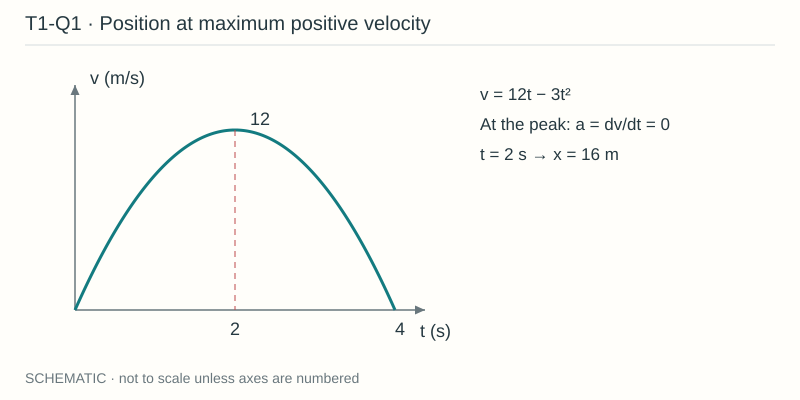
View original diagram / question page
Original handout page, including any printed answers. Open the PDF for full resolution.
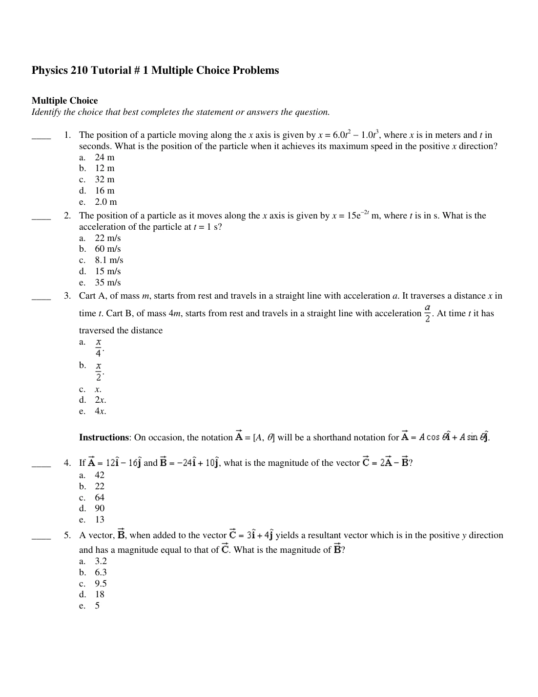
Worked solution · 3 steps
Differentiate position
Positive-direction speed means the maximum positive velocity.
Locate the maximum
Set acceleration to zero. Velocity is a downward-opening parabola.
Evaluate position
Substitute the time into the original position function.
Check. v(2)=12 m/s and d²v/dt² = −6 < 0. Speed magnitude later grows without bound in the negative direction; that is not the requested positive-direction maximum.
Tutorial 1 · 2Acceleration of an exponential trajectory
Problem
For x = 15e^(−2t) m, find acceleration at t = 1 s.

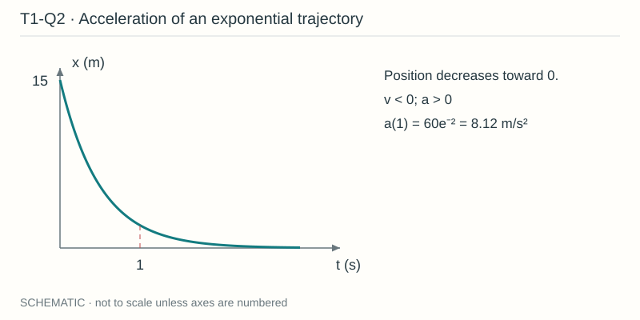
View original diagram / question page
Original handout page, including any printed answers. Open the PDF for full resolution.
Worked solution · 3 steps
Differentiate once
Velocity is negative as position decreases.
Differentiate again
Acceleration is positive.
Evaluate
Use t = 1 s.
Check. The printed choices incorrectly show m/s; acceleration must have units m/s².
Tutorial 1 · 3Displacement for half the acceleration
Problem
Cart A (mass m) starts at rest with acceleration a and travels x in time t. Cart B (mass 4m) starts at rest with acceleration a/2. Find its distance in the same time.

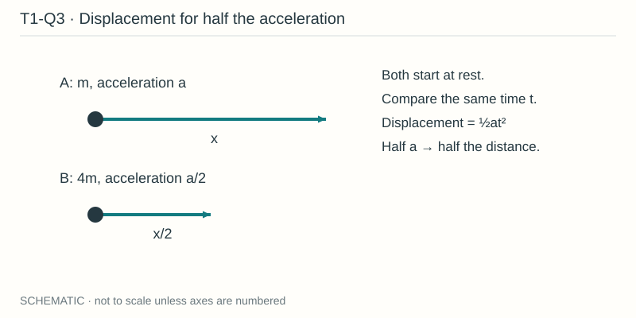
View original diagram / question page
Original handout page, including any printed answers. Open the PDF for full resolution.
Worked solution · 2 steps
Write the first displacement
With zero initial speed, displacement depends on acceleration and time.
Use the second acceleration
The given acceleration already accounts for any force or mass effects.
Check. Doubling or quadrupling mass does not enter kinematics once acceleration is specified.
Tutorial 1 · 4Magnitude of a vector combination
Problem
A = 12i − 16j and B = −24i + 10j. Find |C| for C = 2A − B.

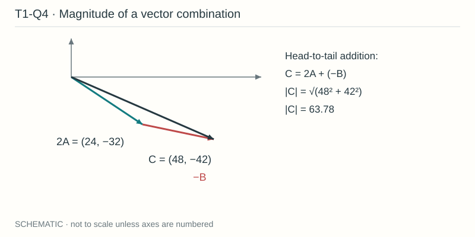
View original diagram / question page
Original handout page, including any printed answers. Open the PDF for full resolution.
Worked solution · 2 steps
Combine components
Subtract the entire vector B.
Compute magnitude
Use orthogonal components.
Check. Both components contribute positively to the squared magnitude.
Tutorial 1 · 5Vector needed for a vertical resultant
Problem
B + C points along +y and has magnitude |C|, where C = 3i + 4j. Find |B|.

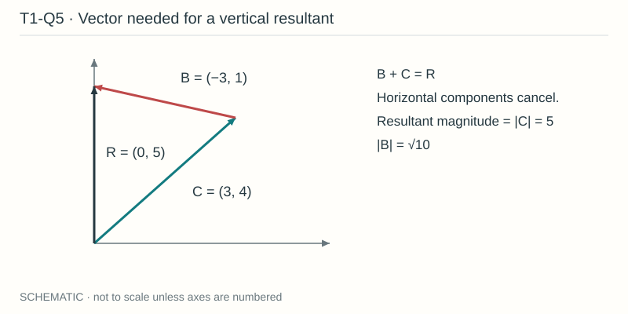
View original diagram / question page
Original handout page, including any printed answers. Open the PDF for full resolution.
Worked solution · 2 steps
Find the required resultant
C has magnitude 5, so the resultant is 5j.
Subtract C
Solve B = R − C.
Check. (−3,1)+(3,4)=(0,5), as required.
Tutorial 1 · 6Speed under constant planar acceleration
Problem
A particle starts at the origin with velocity 9.0j m/s and acceleration (2.0i − 4.0j) m/s². Find its speed when x = 15 m.

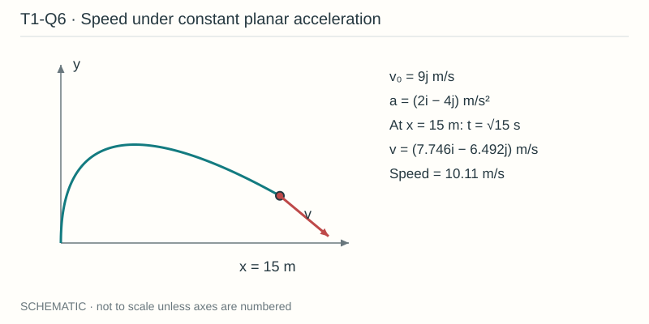
View original diagram / question page
Original handout page, including any printed answers. Open the PDF for full resolution.
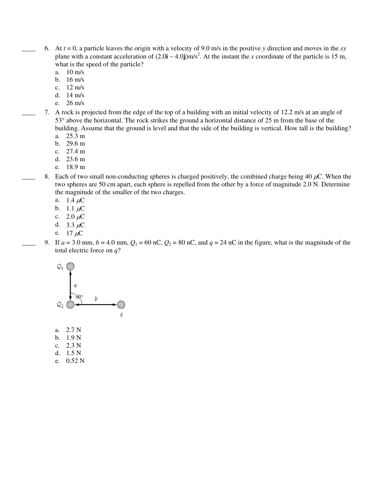
Worked solution · 3 steps
Use horizontal position to find time
The initial horizontal velocity is zero.
Find both velocity components
Acceleration changes each component independently.
Take the magnitude
Speed is not the algebraic sum of components.
Check. The particle is moving downward at this time because vy < 0.
Tutorial 1 · 7Building height from projectile range
Problem
A rock leaves a building at 12.2 m/s, 53° above horizontal, and lands 25 m from its base. Find the height; use g = 9.80 m/s².

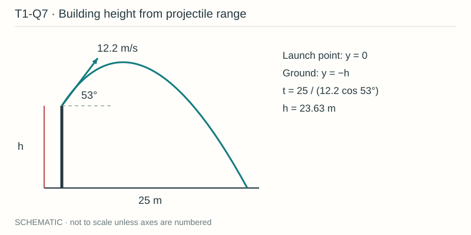
View original diagram / question page
Original handout page, including any printed answers. Open the PDF for full resolution.
Worked solution · 3 steps
Find flight time
Horizontal motion is uniform.
Use vertical displacement
Choose launch point as y = 0, so the ground is at −h.
Calculate height
Rearrange before substituting.
Check. The flight time exceeds the return-to-launch-level time, consistent with landing below the roof.
Tutorial 1 · 8Two positive charges from total charge and force
Problem
Two positive spheres have total charge 40 μC, are separated by 0.50 m, and repel with force 2.0 N. Find the smaller charge.

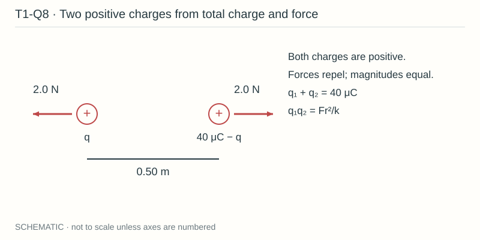
View original diagram / question page
Original handout page, including any printed answers. Open the PDF for full resolution.
Worked solution · 2 steps
Use Coulomb’s law
Let the smaller charge be q.
Solve the quadratic
Select the smaller positive root.
Check. The other charge is 38.56 μC; their sum is 40 μC and their Coulomb force is 2.0 N.
Tutorial 1 · 9Force from two charges in a right triangle
Problem
Place Q₂ = +80 nC at (0,0), Q₁ = +60 nC at (0,3.0 mm), and q = +24 nC at (4.0 mm,0). Find the net force magnitude on q.

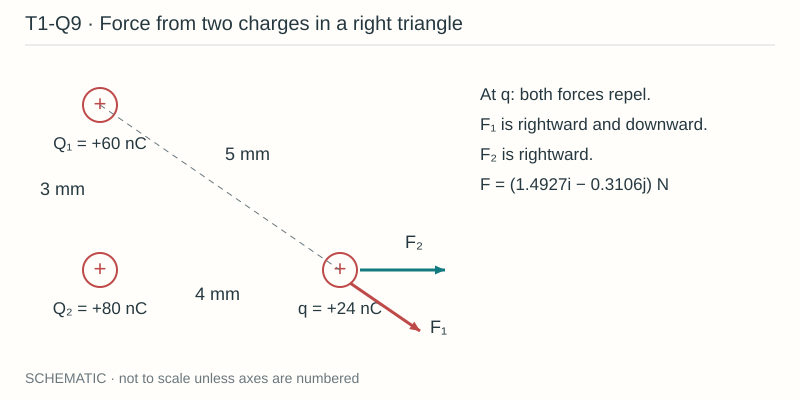
View original diagram / question page
Original handout page, including any printed answers. Open the PDF for full resolution.
Worked solution · 3 steps
Find distances and directions
Both forces repel q. Q₁ produces a rightward and downward force.
Calculate the two forces
Use Coulomb’s law for each separation.
Add components
Take the magnitude only after adding vectors.
Check. The resultant points about 11.8° below +x, consistent with repulsion from both positive charges.
Tutorial 1 · 10Field at the midpoint offset from two unequal charges
Problem
Q = −6.0 nC is at (0,+0.60 m), q = +3.0 nC at (0,−0.60 m), and P at (0.80 m,0). Find the electric-field magnitude at P.

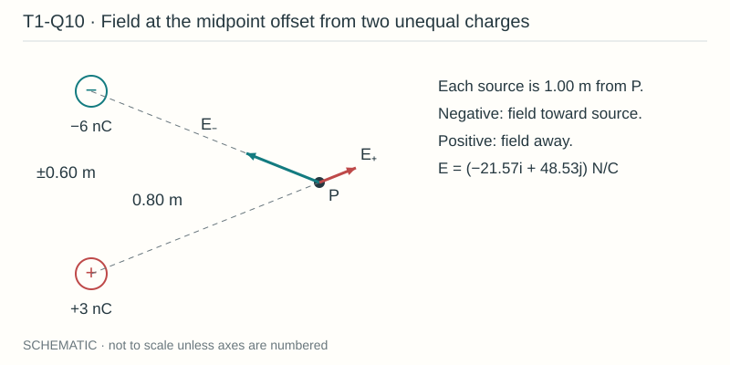
View original diagram / question page
Original handout page, including any printed answers. Open the PDF for full resolution.
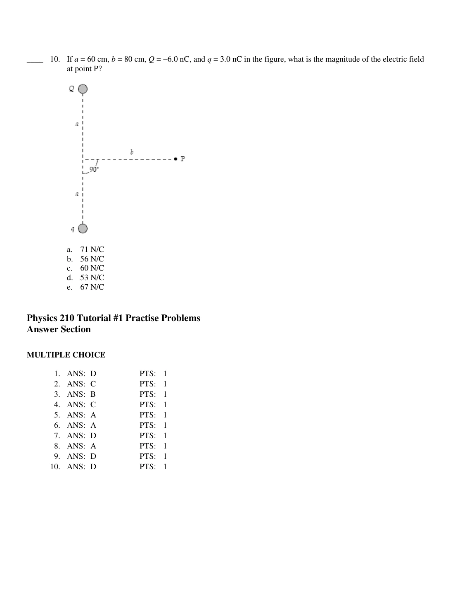
Worked solution · 3 steps
Find equal source distances
Each charge is 1.00 m from P.
Resolve each field
The negative charge pulls the field toward upper left; the positive charge gives upper right.
Add and take magnitude
The vertical components add while horizontal components oppose.
Check. The result points up and left, toward the larger-magnitude negative charge.
02Electric-field distributions10 worked questions10
Tutorial 2 · 15Zero field outside two opposite charges
Problem
A −2.50 μC charge is at x = 0 and a +6.00 μC charge at x = 1.00 m. Find the finite point where E = 0.

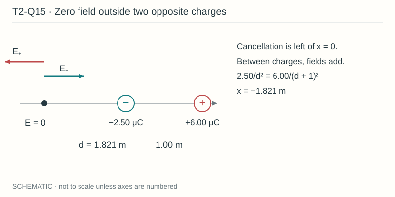
View original diagram / question page
Original handout page, including any printed answers. Open the PDF for full resolution.
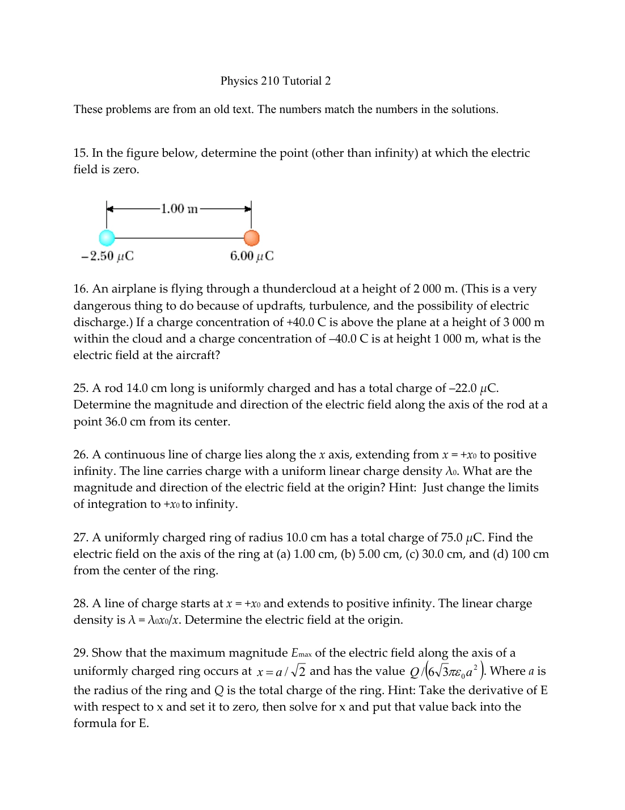
Worked solution · 3 steps
Choose the possible region
Between opposite charges the fields point the same way. Cancellation must be left of the smaller charge.
Equate magnitudes
Let d > 0 be distance to the left of the negative charge.
Solve the distance
Take the positive square roots.
Check. At this point the smaller negative charge is closer; the two fields have equal magnitude and opposite directions.
Tutorial 2 · 16Electric field between thundercloud charge concentrations
Problem
An aircraft is at height 2000 m; +40.0 C is at 3000 m and −40.0 C at 1000 m. Treat the concentrations as point charges and find E at the aircraft.

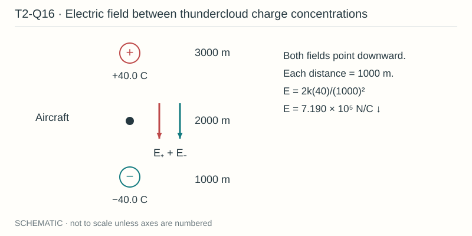
View original diagram / question page
Original handout page, including any printed answers. Open the PDF for full resolution.
Worked solution · 2 steps
Identify directions
The upper positive charge pushes downward; the lower negative charge attracts downward.
Add equal magnitudes
Each source is 1000 m away.
Check. The two equal contributions add rather than cancel.
Tutorial 2 · 25Axial field of a finite negative rod
Problem
A uniformly charged rod has length 0.140 m and total charge −22.0 μC. Find the field magnitude and direction on its axis 0.360 m from its center.

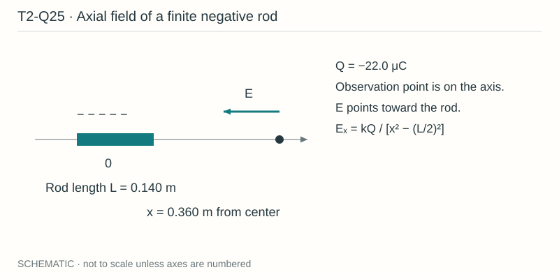
View original diagram / question page
Original handout page, including any printed answers. Open the PDF for full resolution.
Worked solution · 3 steps
Set the coordinate system
Center the rod at the origin and evaluate at x = +0.360 m; λ = Q/L.
Integrate axial contributions
Every source-to-point displacement is along +x.
Substitute
The negative sign indicates a field toward the rod.
Check. The result is slightly larger than k|Q|/x², and reduces to that point-charge result far away.
Tutorial 2 · 26Field of a semi-infinite uniform line
Problem
A line with uniform linear density λ₀ extends along +x from x₀ > 0 to infinity. Find E at the origin.

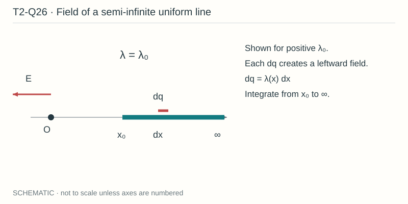
View original diagram / question page
Original handout page, including any printed answers. Open the PDF for full resolution.
Worked solution · 2 steps
Write the vector element
For positive density, each element produces a field toward −x.
Integrate
The far endpoint contributes zero.
Check. Units are N/C; reverse the direction if λ₀ is negative.
Tutorial 2 · 27Four axial fields of a charged ring
Problem
A uniformly charged ring has radius 0.100 m and charge +75.0 μC. Find the axial field at positive axial distances (a) 0.0100 m, (b) 0.0500 m, (c) 0.300 m, (d) 1.00 m.

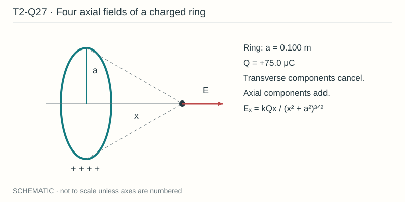
View original diagram / question page
Original handout page, including any printed answers. Open the PDF for full resolution.
Worked solution · 3 steps
Use symmetry
Transverse components cancel; axial components add.
Evaluate near the center
Keep all distances in metres.
Evaluate farther away
All four fields point away from the positively charged ring along +x.
Check. The field initially increases, reaches a maximum at x=a/√2, and then decreases; a monotonic decrease from the center would be incorrect.
Tutorial 2 · 28Field of a semi-infinite nonuniform line
Problem
A line extends from x₀ > 0 to infinity with linear charge density λ(x) = λ₀x₀/x. Find the electric field at the origin.

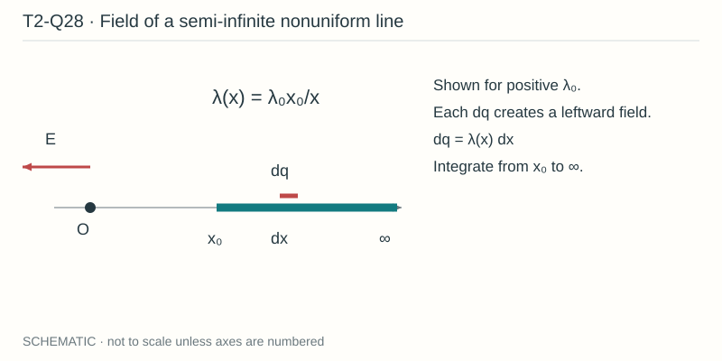
View original diagram / question page
Original handout page, including any printed answers. Open the PDF for full resolution.
Worked solution · 3 steps
Use the local density
Charge in dx decreases with x.
Integrate the vector field
Positive charges produce a field toward −x.
Apply limits
The upper-limit term vanishes.
Check. This is half the uniform-line result for the same starting density; negative λ₀ reverses direction.
Tutorial 2 · 29Location and value of the ring-field maximum
Problem
Show where the magnitude of the axial field of a uniformly charged ring of radius a and charge Q is greatest, and derive its maximum value.

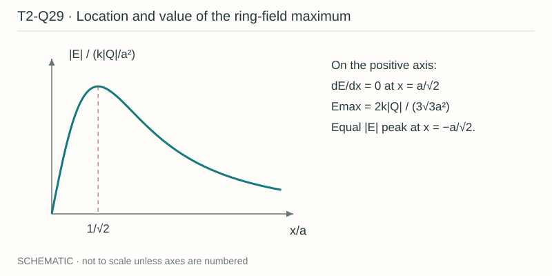
View original diagram / question page
Original handout page, including any printed answers. Open the PDF for full resolution.
Worked solution · 3 steps
Differentiate the positive-side magnitude
Assume a > 0 and nonzero Q.
Find the critical point
The derivative changes from positive to negative.
Substitute back
There is an equal magnitude maximum on the negative side.
Check. E vanishes at the center and tends to zero at infinity, confirming the interior extremum is the maximum.
Tutorial 2 · 30Four axial fields of a uniformly charged disk
Problem
A disk has radius 0.350 m and surface density +7.90×10⁻³ C/m². Find the field at positive axial distances (a) 0.0500 m, (b) 0.100 m, (c) 0.500 m, (d) 2.00 m.

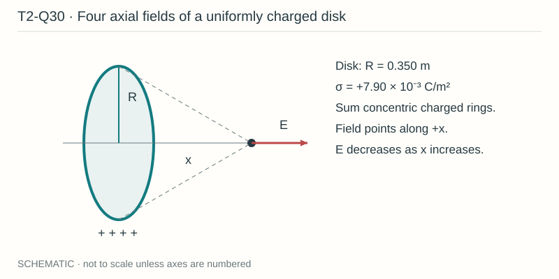
View original diagram / question page
Original handout page, including any printed answers. Open the PDF for full resolution.
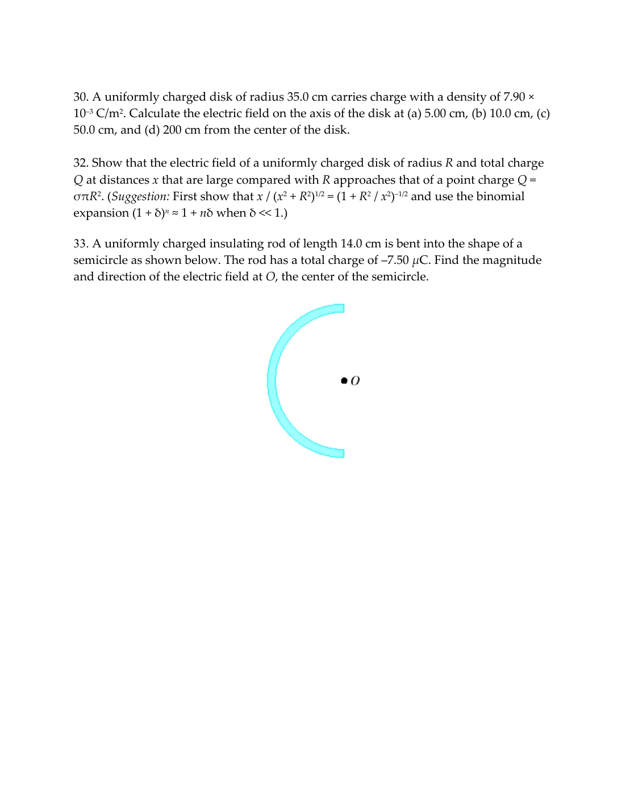
Worked solution · 3 steps
Sum concentric rings
A ring of radius r has charge σ2πr dr.
Evaluate the nearer points
Use the finite-disk expression, not the infinite-sheet approximation.
Evaluate the farther points
Each field points away from the disk on the selected positive side.
Check. All values are below σ/(2ε₀)=4.46×10⁸ N/C and decrease with distance.
Tutorial 2 · 32Far-field limit of a charged disk
Problem
Show that a uniformly charged disk of radius R and charge Q = σπR² acts like a point charge on its axis when x ≫ R.

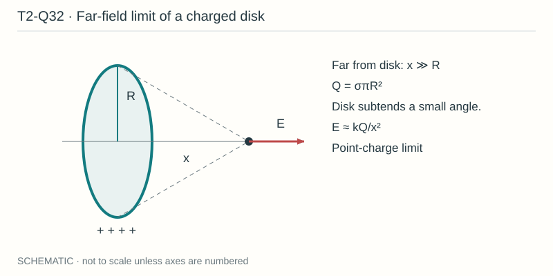
View original diagram / question page
Original handout page, including any printed answers. Open the PDF for full resolution.
Worked solution · 3 steps
Rewrite the geometric factor
Take x > 0.
Apply the binomial approximation
The small parameter is R²/x².
Insert into the disk field
Replace σπR² by Q.
Check. The leading relative correction is −3R²/(4x²), so the approximation improves as distance increases.
Tutorial 2 · 33Field at the center of a negative semicircular rod
Problem
A 0.140 m insulating rod is bent into the left half of a circle. It carries uniform charge −7.50 μC. Find the field at its center O.

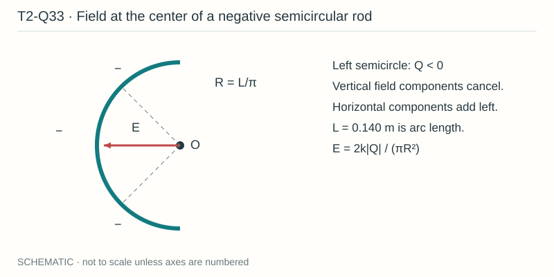
View original diagram / question page
Original handout page, including any printed answers. Open the PDF for full resolution.
Worked solution · 3 steps
Convert arc length to radius
The given length is the semicircular arc length, not its diameter.
Use symmetry and integrate
Vertical components cancel. Negative charge attracts toward the left semicircle.
Calculate
Take +x to the right.
Check. The result points toward the negatively charged material and has zero vertical component.
03Electric flux8 worked questions8
Tutorial 3 · 23.40Charge ratio from field-line counts
Problem
The diagram shows field lines leaving upper charge q₂, with some ending on lower charge q₁. Determine (a) q₁/q₂ and (b) both signs.

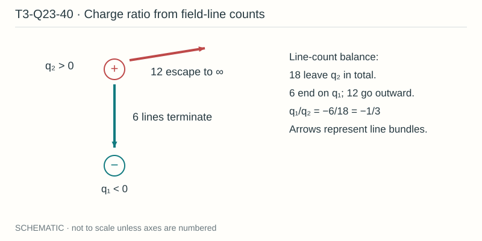
View original diagram / question page
Original handout page, including any printed answers. Open the PDF for full resolution.
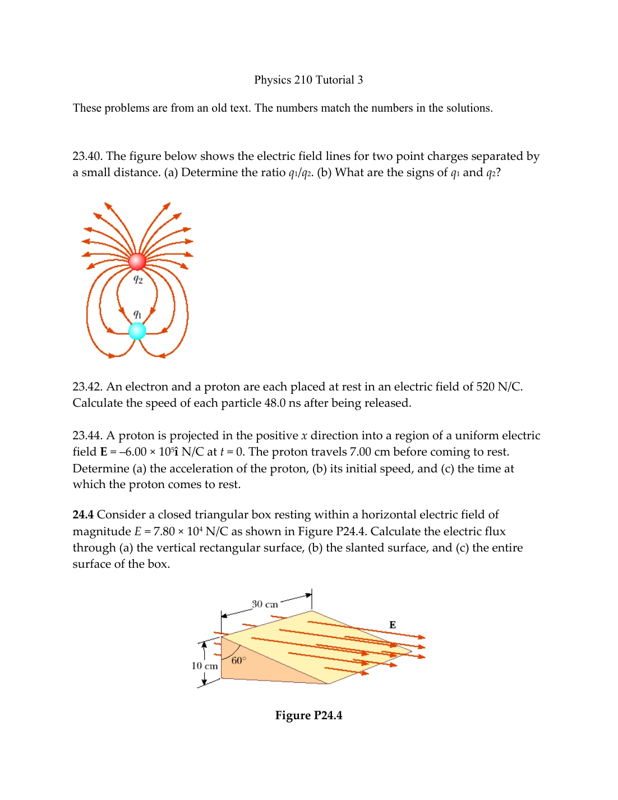
Worked solution · 3 steps
Read arrow directions
Lines leave q₂ and terminate on q₁, so q₂ is positive and q₁ is negative.
Count lines
Six lines terminate on q₁. Eighteen lines leave q₂: six terminate on q₁ and twelve extend outward.
Restore the sign
The charges have opposite signs.
Check. The net positive charge explains why some lines extend to infinity.
Tutorial 3 · 23.42Electron and proton speeds in a uniform field
Problem
An electron and proton start at rest in a uniform 520 N/C electric field. Find each speed after 48.0 ns.

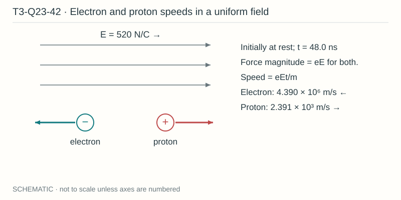
View original diagram / question page
Original handout page, including any printed answers. Open the PDF for full resolution.
Worked solution · 3 steps
Apply electric force and Newton’s law
The particles have equal charge magnitudes but very different masses.
Calculate the electron speed
Use me = 9.109×10⁻³¹ kg and t = 48.0×10⁻⁹ s.
Calculate the proton speed
Use mp = 1.673×10⁻²⁷ kg. The proton accelerates along E; the electron opposite E.
Check. The speed ratio is mp/me ≈1836. Both speeds are sufficiently below c for the intended nonrelativistic model.
Tutorial 3 · 23.44A proton brought to rest by an electric field
Problem
A proton initially moves along +x in E = −6.00×10⁵ i N/C and stops after 7.00 cm. Find (a) acceleration, (b) initial speed, and (c) stopping time.

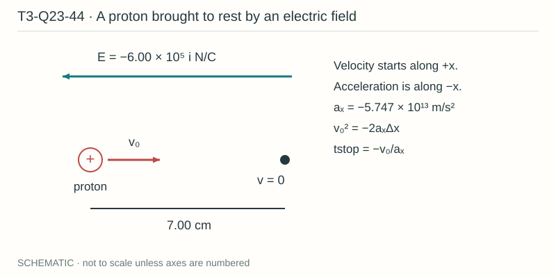
View original diagram / question page
Original handout page, including any printed answers. Open the PDF for full resolution.
Worked solution · 3 steps
Calculate acceleration
A positive proton accelerates in the field direction.
Use the stopping distance
Final speed is zero and displacement is +0.0700 m.
Find stopping time
Use final velocity = initial velocity + at.
Check. Average speed during stopping is v₀/2; multiplying by the stopping time recovers 0.0700 m.
Tutorial 3 · 24.4Flux through a triangular closed box
Problem
A triangular prism lies in a horizontal field E = 7.80×10⁴ N/C. Its vertical face is 10 cm high by 30 cm long; the sloped face makes 60° with the vertical in the end cross-section. Find outward flux through (a) vertical face, (b) slanted face, (c) the entire box.

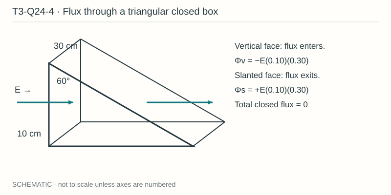
View original diagram / question page
Original handout page, including any printed answers. Open the PDF for full resolution.
Worked solution · 3 steps
Calculate entering flux
The vertical face normal points opposite the field.
Calculate exiting flux
The slanted face has the same projected area perpendicular to E. Alternatively its slant length is 0.10/cos60° = 0.20 m and its normal is 60° from E.
Sum all faces
The remaining faces have normals perpendicular to E, giving zero flux.
Check. A uniform field has zero net flux through a closed surface containing no net charge.
Tutorial 3 · 24.5Flux through coordinate-plane surfaces
Problem
A uniform field E = ai + bj intersects area A. Find flux if the surface lies in (a) yz, (b) xz, (c) xy. Specify the normal convention.

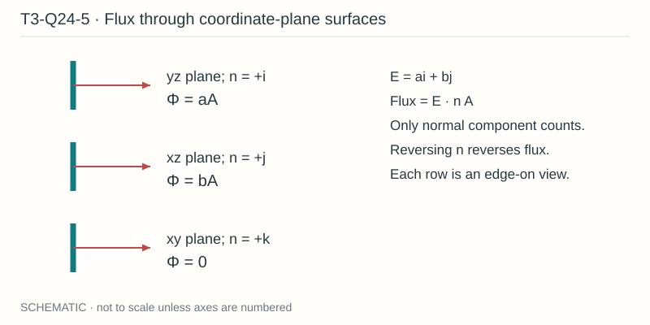
View original diagram / question page
Original handout page, including any printed answers. Open the PDF for full resolution.
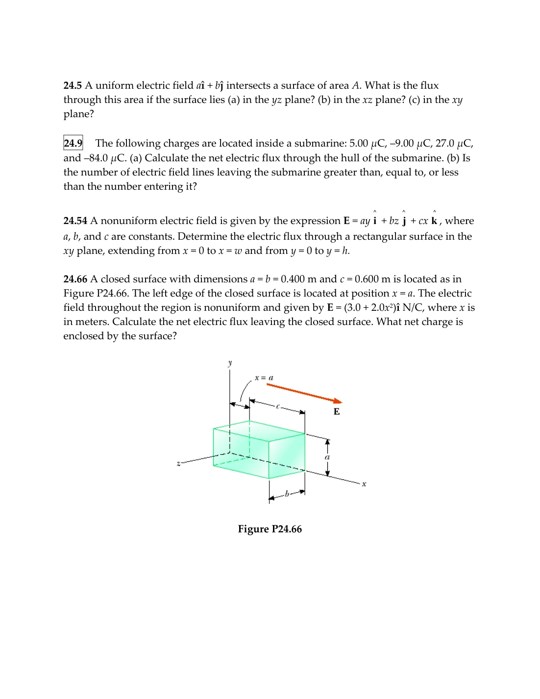
Worked solution · 3 steps
Choose surface normals
An open surface has two possible orientations. Choose +x, +y, and +z for the three cases.
Use the dot product
Only the component normal to each surface contributes.
Evaluate each orientation
The field has no z component.
Check. Reversing the chosen normal reverses the sign of flux; the source does not specify normal orientations.
Tutorial 3 · 24.9Net electric flux through a submarine
Problem
Charges +5.00 μC, −9.00 μC, +27.0 μC, and −84.0 μC lie inside a submarine. Find (a) net outward flux and (b) whether more field lines leave or enter.

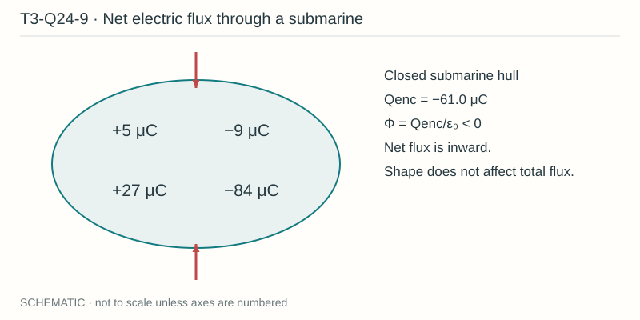
View original diagram / question page
Original handout page, including any printed answers. Open the PDF for full resolution.
Worked solution · 3 steps
Sum enclosed charge
Keep the algebraic signs.
Apply Gauss’s law
The detailed hull shape does not matter.
Interpret the sign
Negative outward flux means more lines enter than leave.
Check. Only net enclosed charge controls total flux; the distribution of individual charges does not change this answer.
Tutorial 3 · 24.54Flux of a nonuniform field through a rectangle
Problem
E = ay i + bz j + cx k, with constant a,b,c. Find flux through the xy rectangle 0 ≤ x ≤ w and 0 ≤ y ≤ h.

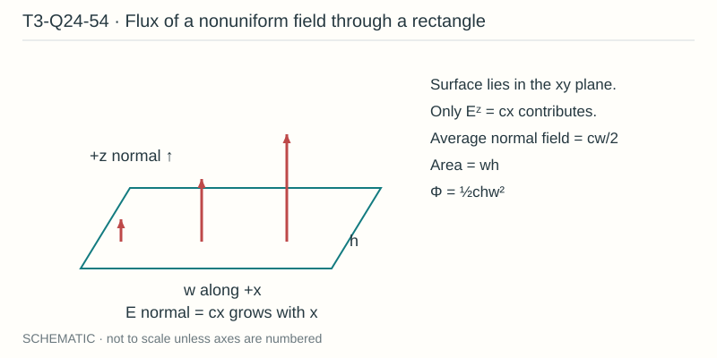
View original diagram / question page
Original handout page, including any printed answers. Open the PDF for full resolution.
Worked solution · 3 steps
Choose the normal
Use +z as the surface normal; reversing it changes the sign.
Retain the normal component
The x and y components do not cross the xy plane.
Integrate
The normal component varies linearly with x.
Check. The average normal field is cw/2; multiplying by area wh gives the same flux.
Tutorial 3 · 24.66Net flux and enclosed charge in a nonuniform field
Problem
A rectangular closed surface has height a = 0.400 m, depth b = 0.400 m and x-length c = 0.600 m. Its left face is at x = a and right face at x = a+c. E = (3.0+2.0x²)i N/C, with x in metres. Find net outward flux and enclosed charge.

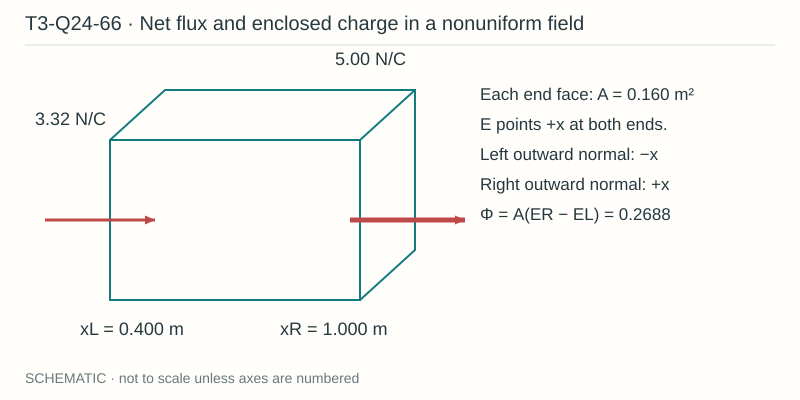
View original diagram / question page
Original handout page, including any printed answers. Open the PDF for full resolution.
Worked solution · 3 steps
Identify the contributing faces
Only faces normal to x carry flux; each has area ab = 0.160 m².
Subtract incoming from outgoing flux
Use the field value at each face, not the field at the center.
Apply Gauss’s law
The net flux is positive.
Check. The constant 3.0 N/C term cancels. Integrating divergence 4x over the volume gives the same flux.
04Gauss’s law9 worked questions9
Tutorial 4 · 1Field from perpendicular infinite sheets
Problem
Two infinite sheets are perpendicular, carrying +60 pC/m² and −80 pC/m². Find the field magnitude away from either sheet.

View original diagram / question page
Original handout page, including any printed answers. Open the PDF for full resolution.
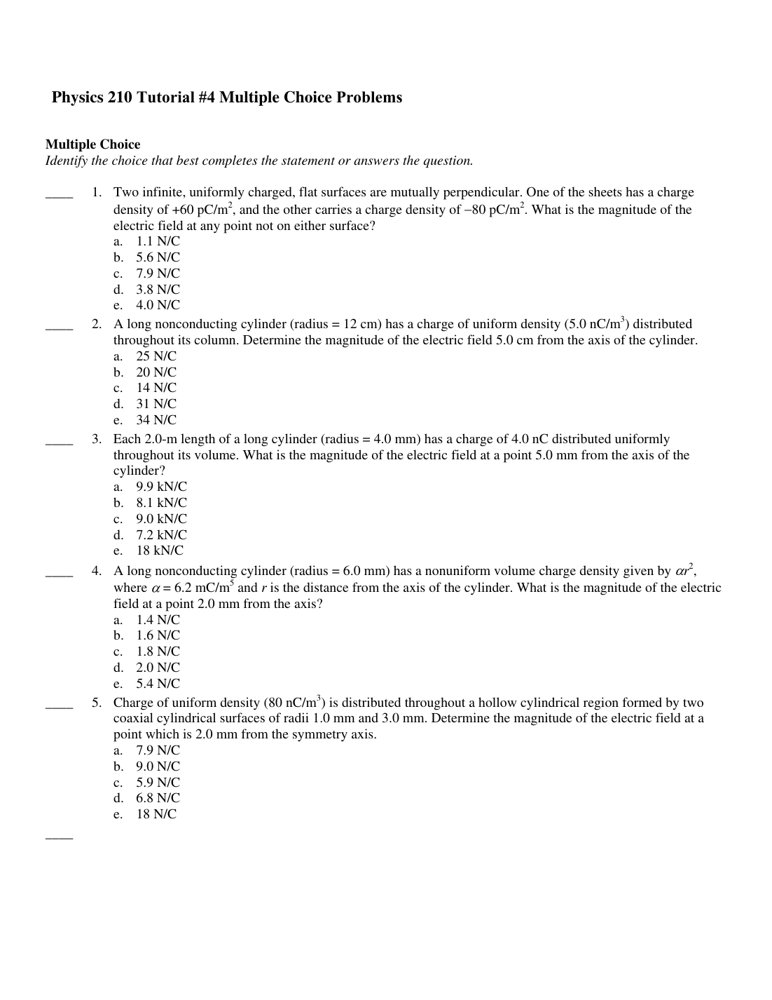
Worked solution · 2 steps
Find each sheet’s field
A single nonconducting infinite sheet produces |σ|/(2ε₀) on either side.
Add perpendicular components
The directions are orthogonal in every region.
Check. Signs change component directions across sheets, but the magnitude remains the same.
Tutorial 4 · 2Field inside a uniformly charged cylinder
Problem
A long nonconducting cylinder has radius 12 cm and uniform density +5.0 nC/m³. Find E at radius 5.0 cm.

View original diagram / question page
Original handout page, including any printed answers. Open the PDF for full resolution.
Worked solution · 3 steps
Choose an interior Gaussian cylinder
Since r < R, only charge inside radius r is enclosed.
Apply Gauss’s law
Flux passes through the curved side only.
Evaluate
Use r = 0.050 m.
Check. Inside a uniformly charged cylinder the field grows linearly from zero at the axis.
Tutorial 4 · 3Field outside a uniformly charged cylinder
Problem
Each 2.0 m length of a long cylinder of radius 4.0 mm contains +4.0 nC uniformly. Find E at radius 5.0 mm.

View original diagram / question page
Original handout page, including any printed answers. Open the PDF for full resolution.
Worked solution · 2 steps
Convert charge to charge per length
The observation point is outside the cylinder.
Apply exterior cylindrical Gauss law
All charge within the Gaussian length is enclosed.
Check. The result decreases as 1/r outside the cylinder and does not depend on its radius.
Tutorial 4 · 4Field inside a cylinder with quadratic density
Problem
A long cylinder of radius 6.0 mm has volume density ρ(r) = αr² with α = 6.2 mC/m⁵. Find E at radius 2.0 mm.

View original diagram / question page
Original handout page, including any printed answers. Open the PDF for full resolution.
Worked solution · 3 steps
Integrate enclosed charge
Use a dummy radius s; density is not constant across the Gaussian volume.
Apply Gauss’s law
The observation point is inside the cylinder.
Convert units and evaluate
α = 6.2×10⁻³ C/m⁵ and r = 2.0×10⁻³ m.
Check. The r³ dependence follows from enclosed charge proportional to r⁴ and flux area proportional to r.
Tutorial 4 · 5Field within a charged cylindrical annulus
Problem
Uniform density +80 nC/m³ occupies a long cylindrical annulus between radii 1.0 mm and 3.0 mm. Find E at radius 2.0 mm.

View original diagram / question page
Original handout page, including any printed answers. Open the PDF for full resolution.
Worked solution · 3 steps
Enclose only occupied volume
The central hollow region contributes no charge.
Apply Gauss’s law
The point lies within the charged annulus.
Evaluate
Use ri = 0.001 m and r = 0.002 m.
Check. The expression tends to zero as r approaches the inner radius.
Tutorial 4 · 6Exterior field of two charged spherical shells
Problem
Concentric spherical surfaces have radii 1.0 cm and 3.0 cm, with uniform densities +40 pC/m² and +60 pC/m² respectively. Find E at r = 4.0 cm.

View original diagram / question page
Original handout page, including any printed answers. Open the PDF for full resolution.
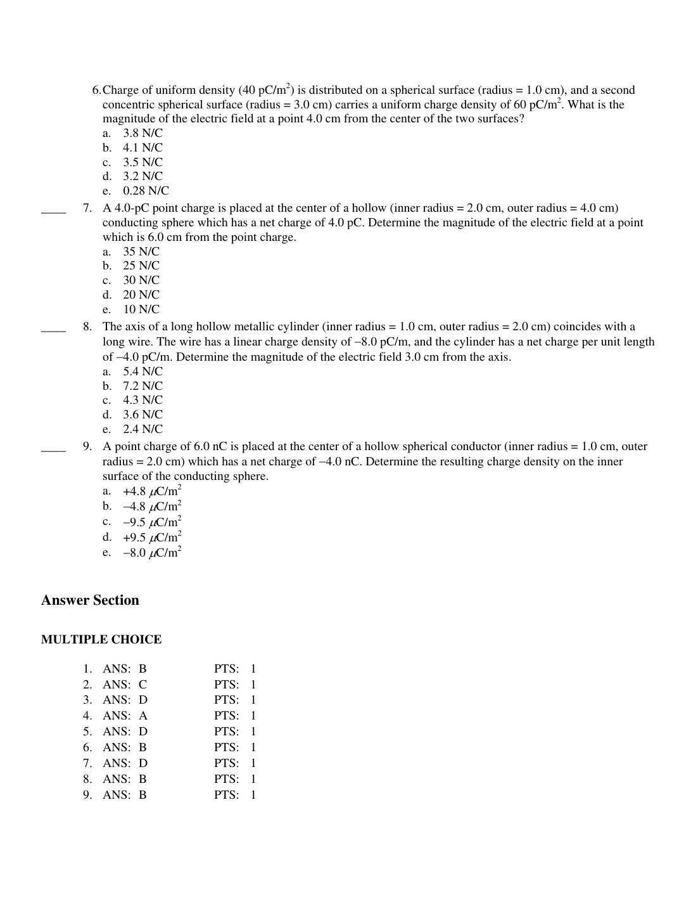
Worked solution · 3 steps
Convert surface densities to charges
Both complete shells are enclosed.
Apply spherical Gauss law
The exterior field equals that of the total charge at the center.
Evaluate
Use metres and C/m².
Check. Both positive shells contribute outward fields; surface area must be included before summing charges.
Tutorial 4 · 7Exterior field of a charged conductor with a central charge
Problem
A +4.0 pC point charge lies at the center of a conducting spherical shell (inner radius 2.0 cm, outer radius 4.0 cm) whose net charge is +4.0 pC. Find E at r = 6.0 cm.

View original diagram / question page
Original handout page, including any printed answers. Open the PDF for full resolution.
Worked solution · 3 steps
Track induced charges
The inner surface has −4.0 pC so the metal’s field vanishes. The outer surface then has +8.0 pC.
Find total enclosed charge
The external Gaussian sphere contains point charge plus shell net charge.
Calculate the exterior field
Use spherical symmetry.
Check. Surface charges −4 pC and +8 pC sum to the specified +4 pC conductor charge.
Tutorial 4 · 8Exterior field of a wire and conducting cylindrical shell
Problem
A long central wire has λw = −8.0 pC/m. A coaxial metallic shell (inner radius 1.0 cm, outer radius 2.0 cm) has net λshell = −4.0 pC/m. Find E at radius 3.0 cm.

View original diagram / question page
Original handout page, including any printed answers. Open the PDF for full resolution.
Worked solution · 3 steps
Add all enclosed charge per length
The observation point is outside both wire and shell.
Apply cylindrical Gauss law
Use the magnitude for the requested field strength.
Determine direction
The enclosed charge is negative, so the field points toward the axis.
Check. The induced inner-surface charge is +8 pC/m and outer-surface charge is −12 pC/m, preserving net shell charge −4 pC/m.
Tutorial 4 · 9Induced charge density on a conductor’s inner surface
Problem
A +6.0 nC point charge lies at the center of a conducting spherical shell with inner radius 1.0 cm, outer radius 2.0 cm and net shell charge −4.0 nC. Find the inner-surface charge density.

View original diagram / question page
Original handout page, including any printed answers. Open the PDF for full resolution.
Worked solution · 2 steps
Use zero field in the metal
A Gaussian surface within the conductor encloses zero net charge.
Divide by the inner surface area
The central charge gives spherical symmetry, so density is uniform.
Check. The outer surface carries +2.0 nC, so −6.0 + 2.0 = −4.0 nC equals the specified shell net charge.
05Electric potential9 worked questions9
Tutorial 5 · 3Accelerating a proton and an electron
Problem
Find the speed of (a) a proton accelerated from rest through 120 V and (b) an electron accelerated through the same potential-difference magnitude (also taking its initial speed as zero).

View original diagram / question page
Original handout page, including any printed answers. Open the PDF for full resolution.
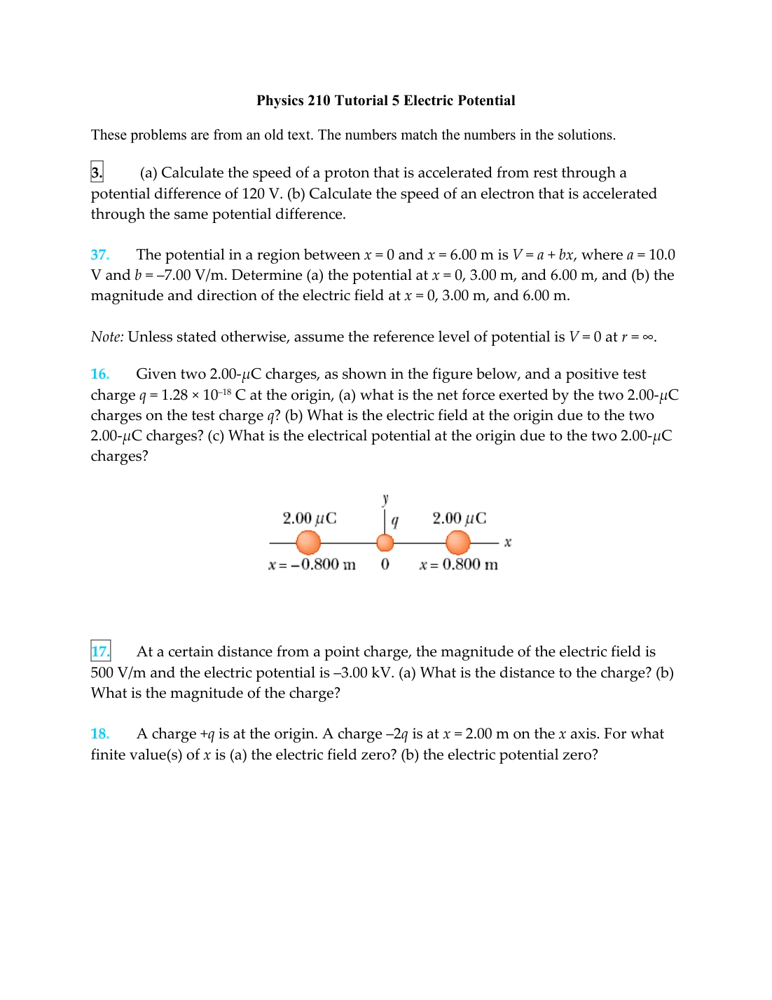
Worked solution · 2 steps
Convert electrical energy to kinetic energy
Acceleration increases kinetic energy by the charge magnitude times the potential-difference magnitude. The proton moves toward lower potential; the electron moves toward higher potential.
Insert each particle mass
Use e = 1.602 × 10⁻¹⁹ C, proton mass 1.673 × 10⁻²⁷ kg and electron mass 9.109 × 10⁻³¹ kg.
Check. Both particles gain 120 eV. The lighter electron is faster by √(mp/me) ≈ 42.8; both speeds are nonrelativistic.
Tutorial 5 · 37Potential and field from a linear function
Problem
V(x) = 10.0 − 7.00x volts for 0 ≤ x ≤ 6.00 m. Find (a) V and (b) the magnitude and direction of E at x = 0, 3.00 and 6.00 m.

View original diagram / question page
Original handout page, including any printed answers. Open the PDF for full resolution.
Worked solution · 2 steps
Evaluate the potential
Substitute each coordinate in the given linear function.
Differentiate
Electric field is the negative spatial derivative. The constant slope gives the same field throughout the stated region.
Check. Potential decreases toward +x, so the field points +x. Endpoint values use the field within the stated region.
Tutorial 5 · 16Symmetric charges: zero field, nonzero potential
Problem
Two +2.00 μC charges lie at x = −0.800 m and +0.800 m. A positive test charge q = 1.28 × 10⁻¹⁸ C is at the origin. Find (a) its net force, (b) E at the origin and (c) V at the origin relative to infinity.

View original diagram / question page
Original handout page, including any printed answers. Open the PDF for full resolution.
Worked solution · 3 steps
Add the fields as vectors
Equal positive charges at equal distances produce equal, opposite x-directed fields at the origin.
Find the test-charge force
The force is the test charge times the net external field.
Add potentials as scalars
Both source charges give positive potential; their potentials do not cancel.
Check. A zero potential gradient at the symmetry point does not require the potential itself to be zero.
Tutorial 5 · 17Recovering a point charge from E and V
Problem
At a point near a single charge, |E| = 500 V/m and V = −3.00 kV relative to infinity. Find (a) the distance from the charge and (b) its magnitude.

View original diagram / question page
Original handout page, including any printed answers. Open the PDF for full resolution.
Worked solution · 2 steps
Eliminate charge
Divide the point-charge potential magnitude by field magnitude.
Recover charge
Use the potential equation. Negative potential means the source charge is negative.
Check. Substitution into k|Q|/r² returns 500 V/m.
Tutorial 5 · 18Where field and potential vanish
Problem
A charge +q is at x = 0 and a charge −2q is at x = 2.00 m. Find every finite x for which (a) E = 0 and (b) V = 0.

View original diagram / question page
Original handout page, including any printed answers. Open the PDF for full resolution.
Worked solution · 3 steps
Locate possible field cancellation
Between the charges both fields point right. To the right of −2q its field is stronger. Cancellation is possible only at x < 0, outside the smaller charge.
Solve the field equation in its valid region
For x < 0, distances are −x and 2−x. Take the positive square root and solve.
Solve the scalar potential equation
Potentials cancel when the distance to −2q is twice the distance to +q. The absolute-value equation has one root between the charges and one to their left.
Check. Neither charge location is allowed. Checking field directions removes the spurious positive root of the squared field equation.
Tutorial 5 · 34Energy of a four-charge rectangle
Problem
At the corners of a rectangle of height a = 0.200 m and width b = 0.400 m are +q (upper left), −2q (upper right), +2q (lower left) and +3q (lower right), with q = 6.00 μC. Find the quasistatic assembly energy from infinity.

View original diagram / question page
Original handout page, including any printed answers. Open the PDF for full resolution.
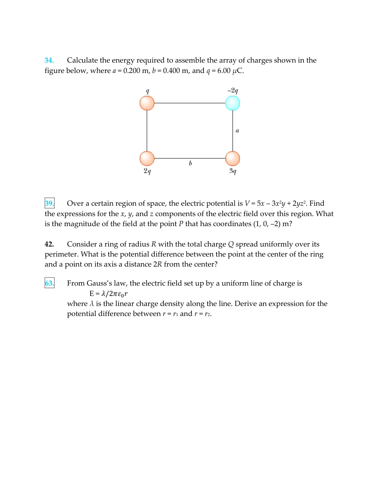
Worked solution · 3 steps
Count all six distinct charge pairs
There are two vertical pairs, two horizontal pairs and two diagonal pairs; count each once. Each diagonal has length D = √(a²+b²).
Evaluate the sum
Vertical terms are attractive overall; horizontal terms are repulsive overall; diagonal terms are attractive overall.
Interpret the sign
The external agent does negative quasistatic work; 3.96 J is released during assembly.
Check. The formula contains exactly 4·3/2 = 6 pair interactions. A negative result represents released energy, not a negative energy requirement magnitude.
Tutorial 5 · 39Electric field from a three-dimensional potential
Problem
V = 5x − 3x²y + 2yz² in SI units. Find Ex, Ey, Ez and |E| at P = (1, 0, −2) m.

View original diagram / question page
Original handout page, including any printed answers. Open the PDF for full resolution.
Worked solution · 3 steps
Take the negative gradient
Differentiate with respect to one coordinate at a time, holding the other two fixed.
Evaluate at P
At x = 1, y = 0, z = −2, the x and y components are both −5 V/m and the z component vanishes.
Find the magnitude
Use the Euclidean norm of the field vector.
Check. The z component is zero at P because y = 0, even though z is nonzero.
Tutorial 5 · 42Potential difference along a charged ring axis
Problem
A ring of radius R carries uniform total charge Q. Find the potential difference between its center and a point on its axis a distance 2R away. State the subtraction order.

View original diagram / question page
Original handout page, including any printed answers. Open the PDF for full resolution.
Worked solution · 3 steps
Sum scalar contributions around the ring
Every charge element is the same distance √(R²+z²) from an axial point.
Evaluate both points
At the center the source distance is R; at z = 2R it is √5 R.
Specify the sign convention
Define the difference as final axial point minus center. The reverse subtraction changes its sign.
Check. For Q > 0, potential decreases away from the ring center along its axis, so this difference is negative.
Tutorial 5 · 63Potential difference near an infinite line charge
Problem
The radial field of an infinite uniform line charge is E = λ/(2πε₀r). Derive V(r₂) − V(r₁).

View original diagram / question page
Original handout page, including any printed answers. Open the PDF for full resolution.
Worked solution · 3 steps
Integrate the field
Choose a radial path; the potential difference is minus the field line integral.
Evaluate the logarithm
The ratio of radii is dimensionless.
Choose a finite reference
An infinite line charge cannot use a finite zero at infinity because the logarithm diverges. The finite-radius potential difference remains well-defined.
Check. For positive λ and r₂ > r₁, the potential difference is negative, consistent with the outward electric field.
06Capacitance8 worked questions8
Tutorial 6 · 7Parallel plates: field, charge and capacitance
Problem
Air-filled parallel plates have area 7.60 cm² and separation 1.80 mm, with 20.0 V applied. Find (a) field, (b) surface charge density, (c) capacitance and (d) charge on each plate. Neglect edge effects.

View original diagram / question page
Original handout page, including any printed answers. Open the PDF for full resolution.
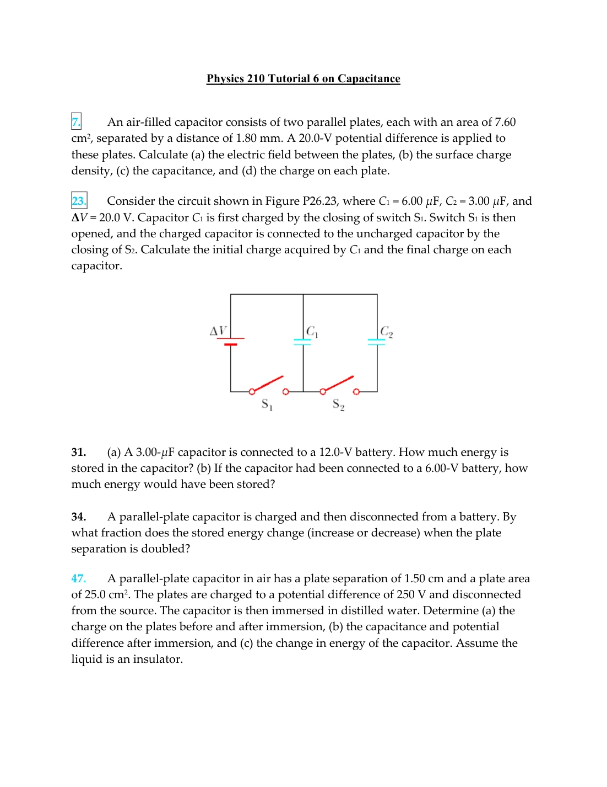
Worked solution · 3 steps
Convert dimensions and find the field
Area is 7.60 × 10⁻⁴ m² and separation is 1.80 × 10⁻³ m.
Find surface charge density
The air-filled field relation gives the magnitude on either plate.
Find capacitance and plate charges
Use parallel-plate capacitance and Q = CV.
Check. σA agrees with CV. The field points from the positive plate toward the negative plate.
Tutorial 6 · 23Charge sharing after switching
Problem
C₁ = 6.00 μF is charged from a 20.0 V battery by closing S₁ while S₂ is open. S₁ is opened, then S₂ connects initially uncharged C₂ = 3.00 μF in parallel. Find the initial charge on C₁ and final charge on each capacitor.

View original diagram / question page
Original handout page, including any printed answers. Open the PDF for full resolution.
Worked solution · 3 steps
Charge the first capacitor
Initially only C₁ is connected across the battery.
Conserve charge after disconnecting the battery
Both capacitors share a final voltage. Total positive-plate charge remains 120 μC.
Allocate the final charge
Each final charge is its capacitance times the common voltage.
Check. Final positive-plate charges sum to 120 μC; each negative plate has the opposite charge. Electrostatic energy is not conserved during charge redistribution.
Tutorial 6 · 31Stored energy at two battery voltages
Problem
A 3.00 μF capacitor is connected to (a) a 12.0 V battery and (b) a 6.00 V battery. Find stored energy in each case.

View original diagram / question page
Original handout page, including any printed answers. Open the PDF for full resolution.
Worked solution · 2 steps
Use the voltage form of capacitor energy
For a capacitor held at voltage V, U = CV²/2.
Evaluate the lower voltage
Halving the voltage reduces energy to one quarter.
Check. U₆/U₁₂ = (6/12)² = 1/4.
Tutorial 6 · 34Doubling separation at fixed charge
Problem
A charged parallel-plate capacitor is disconnected from its battery. By what fraction does its stored energy change when the plate separation doubles?

View original diagram / question page
Original handout page, including any printed answers. Open the PDF for full resolution.
Worked solution · 2 steps
Identify the conserved quantity
Disconnection means plate charge remains fixed; the voltage is free to change.
Use the fixed-charge energy expression
At constant Q, energy is inversely proportional to capacitance.
Check. Mechanical work is needed to pull the attracting plates apart; that work supplies the increased field energy.
Tutorial 6 · 47Isolated capacitor immersed in water
Problem
An air capacitor has separation 1.50 cm and plate area 25.0 cm². It is charged to 250 V, disconnected, then fully immersed in insulating distilled water. Find (a) charge before/after, (b) final capacitance and voltage, and (c) energy change. The handout does not specify the dielectric constant κ; give κ-dependent results and an explicitly conditional numerical example for κ = 80.0.

View original diagram / question page
Original handout page, including any printed answers. Open the PDF for full resolution.
Worked solution · 4 steps
Calculate initial capacitance and charge
Treat air as vacuum and neglect fringing. Disconnection conserves free plate charge.
Insert dielectric at fixed charge
A fully filling dielectric multiplies capacitance by κ; fixed charge means the voltage divides by κ.
Compute energy change
Use Q²/(2C) because the battery is disconnected.
Illustrate with κ = 80.0
These numerical values assume κ = 80.0; the symbolic result applies for the dielectric constant supplied by your course table.
Check. The plates have opposite signs. For any κ > 1, fixed-charge energy decreases. Numerical water results require a specified κ; the source omits it.
Tutorial 6 · 67Find an unknown capacitance by charge sharing
Problem
An isolated unknown capacitor is charged to 100 V, then connected in parallel to an uncharged 10.0 μF capacitor. Their final voltage is 30.0 V. Find the unknown capacitance.

View original diagram / question page
Original handout page, including any printed answers. Open the PDF for full resolution.
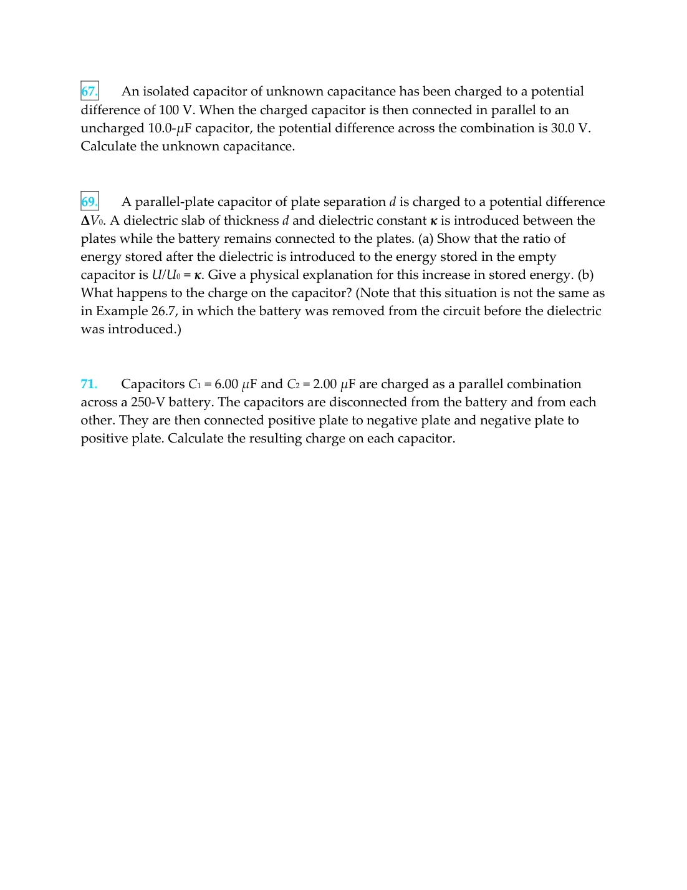
Worked solution · 2 steps
Conserve charge
Initial charge on the unknown capacitor equals total final charge.
Solve for capacitance
Move the C terms to the same side.
Check. Initial charge is 428.6 μC; final charges 128.6 μC and 300 μC sum to the same value.
Tutorial 6 · 69Dielectric insertion with the battery connected
Problem
A parallel-plate capacitor, separation d, remains connected to a battery at ΔV₀ while a dielectric of thickness d and constant κ fills its gap. (a) Show U/U₀ = κ and explain the energy increase. (b) Find the change in charge.

View original diagram / question page
Original handout page, including any printed answers. Open the PDF for full resolution.
Worked solution · 3 steps
Identify the fixed voltage
The battery holds voltage constant while the dielectric increases capacitance.
Find the energy ratio
Use CV²/2 for this fixed-voltage process.
Find charge and explain the energy source
The battery supplies additional charge and energy. During quasistatic insertion, half of the supplied energy increases stored field energy and the remainder can appear as mechanical work.
Check. This is fixed voltage, not fixed charge. The battery is the energy source; inserting a dielectric does not create energy.
Tutorial 6 · 71Reconnect charged capacitors with reversed polarity
Problem
C₁ = 6.00 μF and C₂ = 2.00 μF are charged in parallel across 250 V, disconnected, then connected positive-to-negative and negative-to-positive. Find the resulting charge on each capacitor.

View original diagram / question page
Original handout page, including any printed answers. Open the PDF for full resolution.
Worked solution · 3 steps
Compute initial charges
Take the node containing the initially positive plate of C₁ as the positive reference node.
Conserve signed node charge
Because the connections reverse C₂, the charge on that node is the difference, not the sum.
Recover each capacitor charge
C₁ retains its original polarity. C₂ reverses polarity because its initially negative plate is on the final positive node.
Check. Final charge on the reference node is 750 + 250 = 1000 μC, equal to the initial signed sum.
07Capacitor combinations10 worked questions10
Tutorial 7 · 1Energy in a capacitor network
Problem
In the diagram C₁ = 50 μF and C₂ = 30 μF form one parallel group; C₃ = 36 μF and C₄ = 12 μF form a second parallel group. The two groups are in series across V₀ = 30 V. Find the energy in C₃ and select the answer.

View original diagram / question page
Original handout page, including any printed answers. Open the PDF for full resolution.
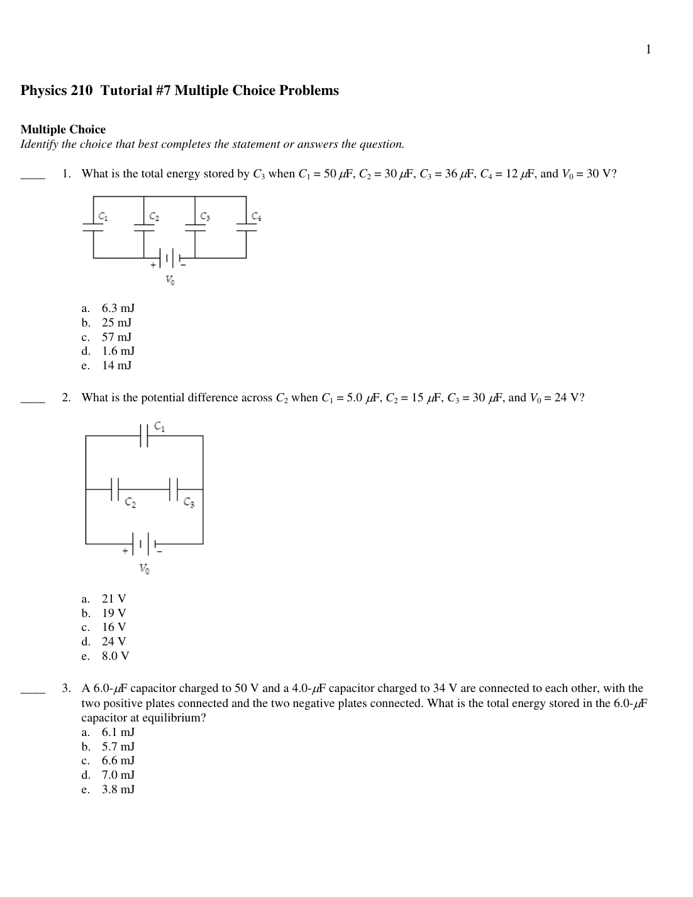
Worked solution · 3 steps
Reduce each parallel group
The common top conductor joins the two groups; the battery separates the bottom nodes, so the groups are in series.
Find the right-group voltage
Series groups have equal charge. The smaller group receives the larger voltage.
Calculate C₃ energy
C₃ shares the full right-group voltage.
Check. The other group has 11.25 V, and the two group voltages sum to 30 V. Agrees with the printed key.
Tutorial 7 · 2Voltage division in a series capacitor branch
Problem
C₁ = 5.0 μF is directly across a 24 V source. A parallel branch contains C₂ = 15 μF and C₃ = 30 μF in series. Find the voltage across C₂.

View original diagram / question page
Original handout page, including any printed answers. Open the PDF for full resolution.
Worked solution · 2 steps
Identify the branch voltage
Both branches connect to the battery nodes, so the C₂–C₃ series pair has 24 V across it. C₁ does not change the ideal battery voltage.
Find series charge and C₂ voltage
Series capacitors carry equal charge magnitude.
Check. V₃ = 8 V; V₂ + V₃ = 24 V. Agrees with the printed key.
Tutorial 7 · 3Energy after same-polarity charge sharing
Problem
A 6.0 μF capacitor at 50 V and a 4.0 μF capacitor at 34 V are connected positive-to-positive and negative-to-negative. Find the final energy stored in the 6.0 μF capacitor.

View original diagram / question page
Original handout page, including any printed answers. Open the PDF for full resolution.
Worked solution · 3 steps
Conserve positive-node charge
The charges add because the polarities match.
Find equilibrium voltage
Both capacitors share the same final voltage.
Compute the requested capacitor energy
Use only the 6.0 μF capacitance for its stored energy.
Check. Final voltage lies between 34 V and 50 V; the printed key is B.
Tutorial 7 · 4Unknown capacitor from two initial voltages
Problem
A 25 μF capacitor charged to 50 V is connected with matching polarity to an unknown capacitor C charged to 20 V. The final common voltage is 36 V. Find C.

View original diagram / question page
Original handout page, including any printed answers. Open the PDF for full resolution.
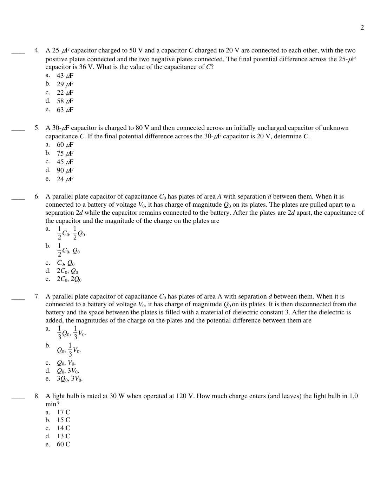
Worked solution · 2 steps
Write charge conservation
Charge on the combined positive node is conserved.
Solve for C
The higher-voltage capacitor loses the charge gained by the lower-voltage capacitor.
Check. Both sides give 1687.5 μC at the unrounded C. Agrees with the printed key.
Tutorial 7 · 5Unknown initially uncharged capacitor
Problem
A 30 μF capacitor initially at 80 V is connected across an uncharged capacitor C. Their final voltage is 20 V. Find C.

View original diagram / question page
Original handout page, including any printed answers. Open the PDF for full resolution.
Worked solution · 2 steps
Conserve charge
The initially uncharged capacitor contributes no initial node charge.
Solve the total capacitance
The fourfold decrease in voltage requires a fourfold increase in total capacitance.
Check. Final charges are 600 μC and 1800 μC, totaling the original 2400 μC. Agrees with the key.
Tutorial 7 · 6Pulling plates apart while connected to a battery
Problem
A parallel-plate capacitor initially has C₀, Q₀ and plate separation d at battery voltage V₀. Separation increases to 2d while the battery remains connected. Find the new capacitance and plate-charge magnitude.

View original diagram / question page
Original handout page, including any printed answers. Open the PDF for full resolution.
Worked solution · 2 steps
Use the new separation
Capacitance is inversely proportional to plate spacing.
Keep the voltage fixed
Charge adjusts through the battery as capacitance changes.
Check. Charge is not conserved on the capacitor because the battery stays connected. Agrees with the printed key.
Tutorial 7 · 7Dielectric insertion after battery disconnection
Problem
A parallel-plate capacitor initially has C₀, Q₀ and V₀. It is disconnected from its battery and filled with a dielectric of constant 3. Find the final plate-charge magnitude and voltage.

View original diagram / question page
Original handout page, including any printed answers. Open the PDF for full resolution.
Worked solution · 2 steps
Keep the isolated charge fixed
The disconnected plates cannot exchange free charge with a battery.
Find the reduced voltage
Voltage follows Q/C.
Check. U_f = U₀/3 at fixed charge. Agrees with the printed key.
Tutorial 7 · 8Charge passing through a light bulb
Problem
A bulb operates at 30 W and 120 V for 1.0 min. How much charge enters and leaves it?

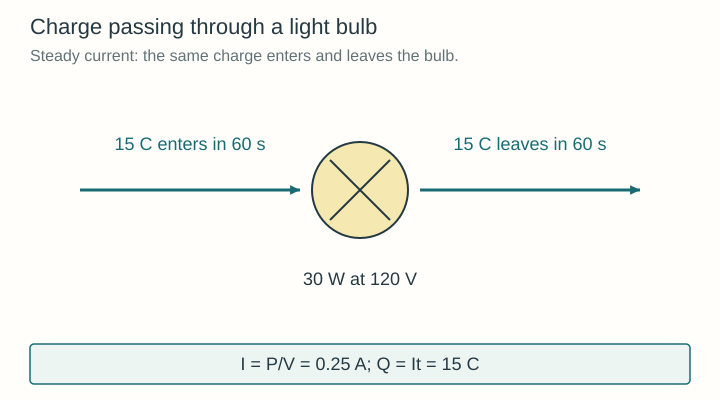
View original diagram / question page
Original handout page, including any printed answers. Open the PDF for full resolution.
Worked solution · 2 steps
Find current from power
Use the stated operating voltage and power.
Convert minutes to seconds
One minute is 60 s; charge is current times elapsed time.
Check. Equal charge enters and leaves in steady state; the bulb does not consume charge. Agrees with the key.
Tutorial 7 · 9Resistivity from wire dimensions
Problem
A 2.0 m wire of diameter 1.0 mm has resistance 0.45 Ω. Find the material resistivity.

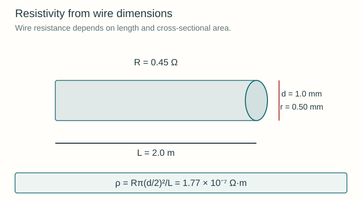
View original diagram / question page
Original handout page, including any printed answers. Open the PDF for full resolution.
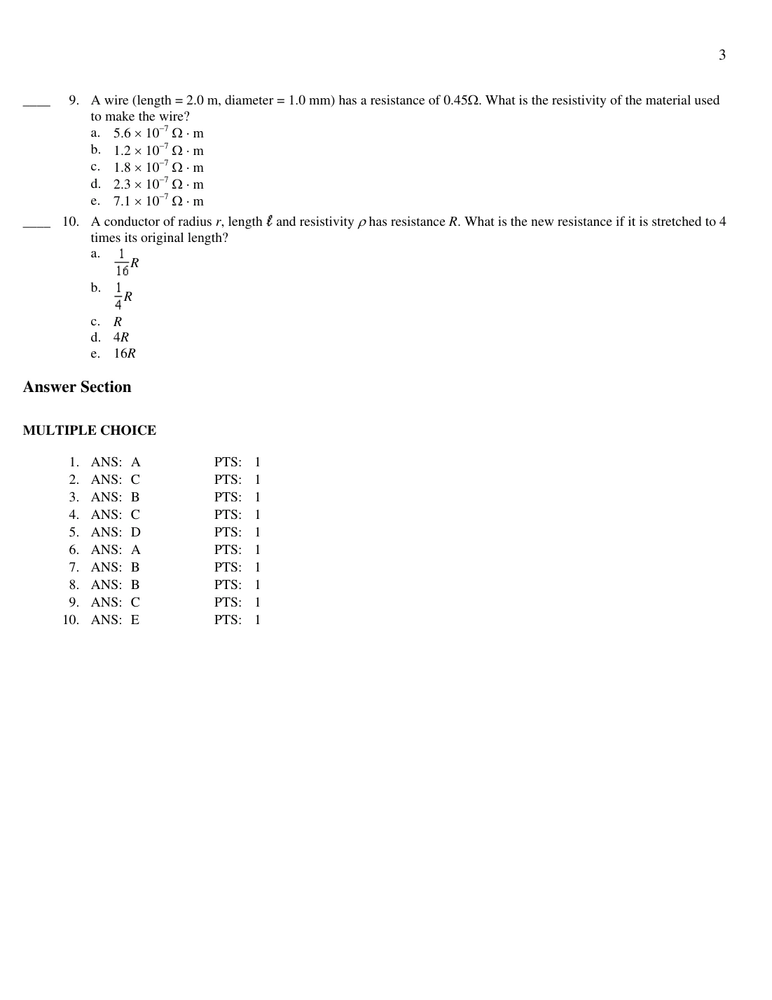
Worked solution · 2 steps
Calculate cross-sectional area
Radius is half the diameter, 0.50 × 10⁻³ m.
Rearrange the wire resistance formula
R = ρL/A gives resistivity.
Check. Using diameter as radius would incorrectly multiply the answer by four. Agrees with the key.
Tutorial 7 · 10Resistance of a stretched wire
Problem
A conductor of length ℓ, radius r, resistivity ρ and resistance R is stretched to four times its original length. Find its new resistance, assuming unchanged resistivity and conserved material volume.

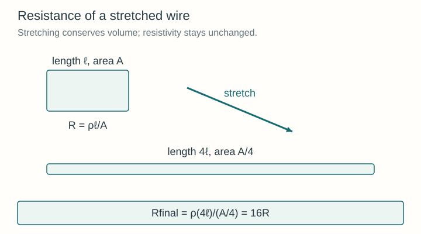
View original diagram / question page
Original handout page, including any printed answers. Open the PDF for full resolution.
Worked solution · 2 steps
Conserve wire volume
Quadrupling length reduces the cross-sectional area to one quarter.
Recalculate resistance
Both the increased length and decreased area increase resistance.
Check. The constant-volume, constant-resistivity assumptions are required for the textbook stretching model. Agrees with the printed key.
08DC circuits & magnetic force10 worked questions10
Tutorial 8 · 1Voltage from an electron count
Problem
5.0 × 10²¹ electrons pass through a 20 Ω resistor in 10 min. Find the potential-difference magnitude across it.

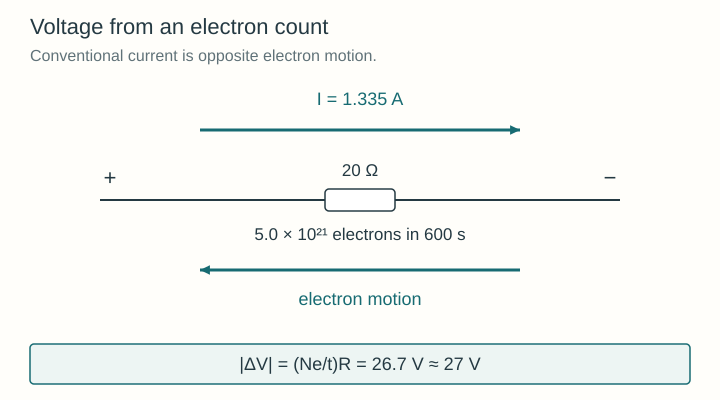
View original diagram / question page
Original handout page, including any printed answers. Open the PDF for full resolution.
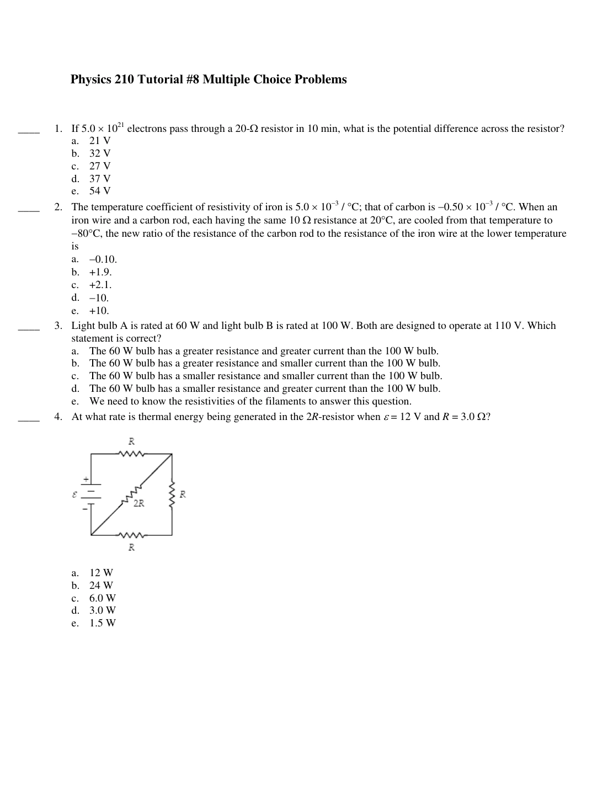
Worked solution · 2 steps
Convert electron count to charge magnitude
Multiply by the elementary charge; convert time to 600 s.
Calculate current and voltage
Use average current, then Ohm’s law.
Check. The electron motion is opposite conventional current, but that does not change the requested voltage magnitude. Matches key C.
Tutorial 8 · 2Resistance ratio after cooling
Problem
Iron and carbon each have resistance 10 Ω at 20 °C. Their temperature coefficients are +5.0 × 10⁻³ /°C and −0.50 × 10⁻³ /°C respectively. Use the linear model to find Rcarbon/Riron at −80 °C.

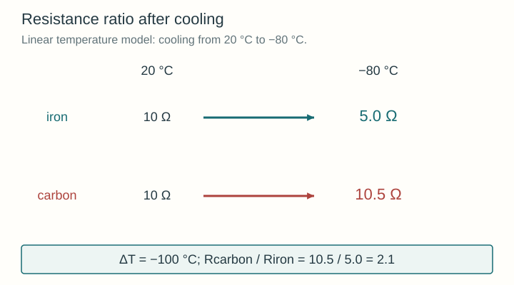
View original diagram / question page
Original handout page, including any printed answers. Open the PDF for full resolution.
Worked solution · 3 steps
Calculate the temperature change
Use the difference from the reference temperature.
Calculate each new resistance
Apply R = R₀(1 + αΔT) separately.
Form the requested ratio
Carbon’s negative coefficient makes its resistance increase as it cools.
Check. Both modeled resistances remain positive; the result agrees with the key.
Tutorial 8 · 3Comparing two rated light bulbs
Problem
Bulb A is rated 60 W and bulb B 100 W, both at 110 V. Compare their operating resistance and current at the rated voltage.

View original diagram / question page
Original handout page, including any printed answers. Open the PDF for full resolution.
Worked solution · 2 steps
Compare resistance
At equal voltage, resistance is inversely proportional to power.
Compare current
At equal voltage, current is proportional to power.
Check. These are operating resistances at rated voltage; incandescent resistance varies with temperature. Matches key B.
Tutorial 8 · 4Power in the diagonal resistor
Problem
A 12 V source feeds a top resistor R. From its right-hand node to the source return, a diagonal resistor 2R is in parallel with two other R resistors in series. With R = 3.0 Ω, find power in the diagonal 2R resistor.

View original diagram / question page
Original handout page, including any printed answers. Open the PDF for full resolution.
Worked solution · 3 steps
Reduce the two return paths
The side-and-bottom path has resistance 2R, equal to the diagonal path. Their parallel equivalent is R.
Find the return-path voltage
The source voltage divides equally between top R and the return equivalent R.
Calculate diagonal power
The actual diagonal resistance is 2R = 6.0 Ω.
Check. Each return branch carries 1 A; the two branch currents sum to 2 A. Matches key C.
Tutorial 8 · 5Direction of current in a resistor branch
Problem
In the diagram the middle branch has a 20 Ω resistor below a 50 V source (+ at top), with 1.8 A upward. The left branch has a 30 V source (+ at top) and a bottom 10 Ω resistor. Find the current magnitude and direction through the 10 Ω resistor.

View original diagram / question page
Original handout page, including any printed answers. Open the PDF for full resolution.
Worked solution · 3 steps
Set the bottom/right node to zero
Move upward through the middle branch: a 36 V drop across the resistor is followed by a 50 V rise across the source.
Find the lower-left node potential
The left source puts the top node 30 V above its lower terminal.
Use Ohm’s law with a direction
The right end of the 10 Ω resistor is at 0 V and its left end is at −16 V; conventional current flows right to left.
Check. The middle current sets the node voltage without needing the unspecified right-hand R. The loop voltage changes sum to zero; matches key A.
Tutorial 8 · 6Potential change along a circuit segment
Problem
Travel from A to B through a 20 V source (− then +), a 20 Ω resistor carrying 1.5 A from A toward B, and a 12 V source (+ then −). Find VB − VA.

View original diagram / question page
Original handout page, including any printed answers. Open the PDF for full resolution.
Worked solution · 2 steps
Assign each signed voltage change
Crossing − to + gives a rise; going with current through a resistor gives a drop; crossing + to − gives a drop.
Add the changes from A to B
The sum is the requested final-minus-initial potential.
Check. The B endpoint lies 22 V below A; reversing the traversal reverses every term. Matches key B.
Tutorial 8 · 7Brightness in a series-parallel bulb circuit
Problem
Three identical 100 W bulbs are connected to a 110 V source: bulb A is in series with parallel bulbs B and C. Which is brightest?

View original diagram / question page
Original handout page, including any printed answers. Open the PDF for full resolution.
Worked solution · 2 steps
Compare branch currents
Symmetry gives equal currents in B and C. Their sum passes through A.
Relate power to brightness
Using equal bulb resistance, dissipated power is I²R. Bulb A dissipates four times the power of either parallel bulb.
Check. The power ratio 4:1:1 uses the equal-resistance bulb model. The brightness ranking is the expected answer in the printed key.
Tutorial 8 · 8Magnetic acceleration of an electron
Problem
An electron has velocity 6.0 × 10⁶ m/s in +x. The field is B = (3.0, 1.5, 2.0) T. Find the magnetic-acceleration magnitude.

View original diagram / question page
Original handout page, including any printed answers. Open the PDF for full resolution.
Worked solution · 3 steps
Keep only perpendicular field components
The x component is parallel to velocity and exerts no magnetic force.
Find force and acceleration magnitudes
Use the elementary-charge magnitude and electron mass.
Check the force direction
v × B has components −vBz in y and +vBy in z. Multiplication by the electron’s negative charge reverses both.
Check. Magnetic acceleration is perpendicular to velocity and changes direction rather than speed. Matches key C.
Tutorial 8 · 9Infer field direction from an electron force
Problem
An electron moves in +x and experiences magnetic force in +z. Given Bx = 0, determine the magnetic-field direction.

View original diagram / question page
Original handout page, including any printed answers. Open the PDF for full resolution.
Worked solution · 2 steps
Account for negative charge
F = q(v × B). For an electron, v × B must point opposite the force, toward −z.
Apply the right-hand rule
Since x × y = z, x × (−y) = −z. A z component of B would create an unwanted y force, so Bz = 0.
Check. Multiplying the −z cross product by negative electron charge produces the specified +z force. Matches key A.
Tutorial 8 · 10Solve a magnetic cross product for By
Problem
A +2.0 C charge moves with v = (2.0i + 4.0j + 6.0k) m/s and experiences F = (4.0i − 20j + 12k) N. Bx = 0. Find By.

View original diagram / question page
Original handout page, including any printed answers. Open the PDF for full resolution.
Worked solution · 3 steps
Expand the cross product
Set B = (0, By, Bz) in F = q(v × B).
Use the z component
The z force directly isolates By.
Verify the remaining components
The y force gives Bz = 5.0 T, which also reproduces Fx.
Check. F·v = 4(2) − 20(4) + 12(6) = 0, as required for a purely magnetic force. Matches key B.
09Magnetic force on charges11 worked questions11
Tutorial 9 · 1Acceleration of a negatively charged particle
Problem
A 2.0 mg particle with charge −6.0 μC moves at 3.0 km/s in +x through B=(2i+3j+4k) mT. Find its acceleration.

View original diagram / question page
Original handout page, including any printed answers. Open the PDF for full resolution.
Worked solution · 3 steps
Convert to SI
A milligram is 10⁻⁶ kg; retain the negative charge.
Evaluate the cross product
The x component of the field is parallel to the velocity and contributes no force.
Apply Newton’s law
Multiplication by the negative charge reverses the cross-product direction.
Check. Acceleration is perpendicular to velocity and field. Matches key (a).
Tutorial 9 · 2Net force on an L-shaped wire
Problem
A 25 A current flows from x=−2 m to 0, then y=0 to 3 m, in B=40 mT in +z. Find the force magnitude.

View original diagram / question page
Original handout page, including any printed answers. Open the PDF for full resolution.
Worked solution · 3 steps
Use endpoint displacement
For a uniform field, the integral of dℓ equals end minus start.
Add perpendicular force components
Use i×k=−j and j×k=i.
Take the magnitude
Combine components by Pythagoras.
Check. The two segments separately produce −2j N and +3i N. Matches key (d).
Tutorial 9 · 3Force on an inverted U-shaped wire
Problem
A wire rises a distance L, runs 2L in +x, then descends L. Current follows this path; uniform B points +y. Find the net magnetic force.

View original diagram / question page
Original handout page, including any printed answers. Open the PDF for full resolution.
Worked solution · 2 steps
Separate the three segments
The two vertical legs are parallel or antiparallel to B, so each has zero magnetic force.
Find the horizontal force
The top segment carries current in +x, so i×j=k.
Check. The endpoint displacement is 2L i, which gives the same net force. Matches key (b).
Tutorial 9 · 4Torque on an 80-turn loop
Problem
An 80-turn rectangular loop has a=0.40 m, b=0.30 m and I=8.0 A. B=40 mT in +x. Its plane makes θ=30° with +x as shown. Find the torque magnitude about y.

View original diagram / question page
Original handout page, including any printed answers. Open the PDF for full resolution.
Worked solution · 2 steps
Identify the angle to the normal
The torque formula uses the normal-to-field angle, 90°−θ, rather than the angle to the plane.
Evaluate the dipole torque
Multiply by the number of turns.
Check. The value is below the maximum NIAB=3.072 N·m. Matches key (d).
Tutorial 9 · 5Current required for loop torque
Problem
A single-turn square loop is 50 cm on a side. A 70 mT field makes 40° with the loop plane. What current gives a torque of 1.0 N·m about the specified central axis?

View original diagram / question page
Original handout page, including any printed answers. Open the PDF for full resolution.
Worked solution · 2 steps
Find area and normal angle
Convert 50 cm to 0.50 m; the normal is 50° from the field.
Solve for current
Use sin50°=cos40°.
Check. Substitution gives 1.0 N·m. Matches key (d).
Tutorial 9 · 6Helix pitch and entry angle
Problem
A proton enters a 0.50 T field along +x with speed 60 km/s. Its helix pitch is 5.0 mm. Find the angle between its velocity and B.

View original diagram / question page
Original handout page, including any printed answers. Open the PDF for full resolution.
Worked solution · 3 steps
Find the cyclotron period
Use mp=1.67×10⁻²⁷ kg and e=1.60×10⁻¹⁹ C.
Use pitch to find parallel speed
Pitch is the distance advanced along the field in one revolution.
Find the entry angle
The parallel component is v cosα.
Check. The parallel speed is smaller than the total speed, as required. Matches key (b).
Tutorial 9 · 7Classify a charged particle’s trajectory
Problem
A particle has m=3.0 μg and q=5.0 μC. In B=60j mT its initial velocity is (30j−40k) m/s. Determine the subsequent trajectory.

View original diagram / question page
Original handout page, including any printed answers. Open the PDF for full resolution.
Worked solution · 3 steps
Resolve the velocity
Both a parallel and a perpendicular component are present, so the path is helical. Convert μg to 10⁻⁹ kg.
Find radius and period
Only the perpendicular speed enters the radius.
Find the pitch
The particle advances along +y during each turn.
Check. Pitch is 1.88 m, not 6.3 cm; the path is not a circle. Matches key (d).
Tutorial 9 · 8Distance travelled in circular motion
Problem
A proton follows a circular path of radius 2.0 mm in B=0.25 T. Find its total distance in 1.0 s, using m=1.67×10⁻²⁷ kg and q=1.6×10⁻¹⁹ C.

View original diagram / question page
Original handout page, including any printed answers. Open the PDF for full resolution.
Worked solution · 2 steps
Balance radial force
Magnetic force supplies centripetal acceleration.
Use constant speed
Magnetism changes direction without changing speed; distance is speed times time.
Check. Distance counts every revolution; it is not the final displacement. Matches key (d).
Tutorial 9 · 9Electron cyclotron period
Problem
An electron moves in a circle of radius 15 cm in a 3.0 G uniform field. Find the period.

View original diagram / question page
Original handout page, including any printed answers. Open the PDF for full resolution.
Worked solution · 2 steps
Convert gauss to tesla
Use 1 G=10⁻⁴ T.
Eliminate the radius
Combining T=2πr/v with r=mv/(|q|B) makes the period independent of radius.
Check. The radius affects speed but cancels from the nonrelativistic period. Matches key (a).
Tutorial 9 · 10Proton orbit after acceleration
Problem
A proton accelerates from rest through 2.5 kV, then enters B=0.60 T perpendicularly. Find its circular-path radius.

View original diagram / question page
Original handout page, including any printed answers. Open the PDF for full resolution.
Worked solution · 2 steps
Convert electric energy to kinetic energy
The gain in kinetic energy is eΔV.
Find the magnetic radius
Substitute the speed into the radial-force result.
Check. The speed is much less than c, consistent with nonrelativistic energy. Matches key (b).
Tutorial 9 · 11Field for a proton velocity selector
Problem
A velocity selector must transmit 2.0 keV protons with E=80 kV/m. Find B.

View original diagram / question page
Original handout page, including any printed answers. Open the PDF for full resolution.
Worked solution · 2 steps
Find proton speed
Convert 2.0 keV to kinetic energy using e.
Balance transverse forces
Arrange crossed electric and magnetic forces in opposite directions.
Check. At this speed E=vB, so the transmitted protons are undeflected. Matches key (d).
10Magnetic force & field calculations10 worked questions10
Tutorial 10 · 1Perpendicular fields of two long wires
Problem
A 30 A long wire lies along x. A 40 A long wire perpendicular to xy passes through (0,4,0) m. Find the magnetic-field magnitude at (0,2,0) m.

View original diagram / question page
Original handout page, including any printed answers. Open the PDF for full resolution.
Worked solution · 2 steps
Calculate both field magnitudes
The observation point is 2 m from each wire.
Add vectors
One field points along z and the other along x. Their signs depend on current direction, but their magnitude sum is orthogonal.
Check. The current directions are not specified, but they cannot change this magnitude. Matches key (b).
Tutorial 10 · 2Superposition from three parallel wires
Problem
For I=20 A, three x-parallel wires carry 4I in +x at y=2 m, 3I in −x at y=−1 m, and I in +x at y=−3 m. Find B at the origin.

View original diagram / question page
Original handout page, including any printed answers. Open the PDF for full resolution.
Worked solution · 2 steps
Determine signs with the right-hand rule
At the origin the upper and middle wires produce −z fields; the lower wire produces +z.
Add signed fields
All three field vectors are along the z axis.
Check. The two larger contributions reinforce each other. Matches key (c).
Tutorial 10 · 3Field from concentric circular arcs
Problem
The shown wire has a clockwise quarter-circle of radius a=2.0 cm and a clockwise three-quarter-circle of radius b=4.0 cm, joined by radial segments. I=2.0 A. Find B at their common center P.

View original diagram / question page
Original handout page, including any printed answers. Open the PDF for full resolution.
Worked solution · 2 steps
Discard radial contributions
For radial connectors, dℓ is parallel to the displacement toward P, so the Biot–Savart cross product vanishes.
Add arc fields
Each arc contributes μ₀Iφ/(4πR). Both currents circulate clockwise and produce into-page fields.
Check. Both arc contributions add; the connecting straight pieces contribute zero. Matches key (b).
Tutorial 10 · 4Infer currents from the force between wires
Problem
Two long parallel wires are 6.0 mm apart. One current is twice the other. The force on 3.0 m of wire is 8.0 μN. Find the greater current.

View original diagram / question page
Original handout page, including any printed answers. Open the PDF for full resolution.
Worked solution · 2 steps
Write the force using the smaller current
Let the smaller current be i and the larger be 2i.
Solve and double
Use SI lengths and force.
Check. The product 0.20×0.40 A² reproduces 8.0 μN. Matches key (b).
Tutorial 10 · 5Force on one of three equidistant wires
Problem
Three long wires at the vertices of an equilateral triangle of side R=6.0 mm each carry 5.0 A out of the page. Find the force on a 2.0 m length of any one wire.

View original diagram / question page
Original handout page, including any printed answers. Open the PDF for full resolution.
Worked solution · 2 steps
Calculate one attractive force
Currents in the same direction attract.
Resolve the equal forces
The forces toward the other two vertices are 60° apart.
Check. The force points from the chosen vertex toward the triangle’s center. Matches key (d).
Tutorial 10 · 6Field inside a coaxial conducting shell
Problem
A hollow conductor with inner radius 2.0 mm and outer radius 4.0 mm carries 24 A uniformly across its material. A coaxial wire carries 24 A oppositely. Find B at radius 3.0 mm.

View original diagram / question page
Original handout page, including any printed answers. Open the PDF for full resolution.
Worked solution · 3 steps
Find the enclosed shell current
Only the annular material between 2 mm and 3 mm lies inside the Amperian circle.
Subtract opposite currents
Take the central wire’s direction as positive.
Apply Ampère’s law
Cylindrical symmetry makes B constant on the circle.
Check. Outside the shell the net enclosed current is zero; at this internal radius it is nonzero. Matches key (b).
Tutorial 10 · 7Combine wire and solenoid fields
Problem
A 3.0 A wire lies along the axis of a long solenoid of radius 3.0 cm, n=900 turns/m and current 30 mA. Find B at radius 2.0 cm, neglecting end effects.

View original diagram / question page
Original handout page, including any printed answers. Open the PDF for full resolution.
Worked solution · 3 steps
Calculate the axial field
The observation point lies inside the solenoid.
Calculate the azimuthal field
The axial wire’s field circles the axis and is perpendicular to the solenoid field.
Take the vector magnitude
Use Pythagoras for the orthogonal fields.
Check. Adding magnitudes directly would incorrectly give 64 μT. Matches key (d).
Tutorial 10 · 8Magnetic flux through an internal disk
Problem
A solenoid of radius 4.0 cm and length 4.0 m has 8000 turns and I=5.0 A. Find flux through a coaxial circular disk of radius 2.0 cm at its center.

View original diagram / question page
Original handout page, including any printed answers. Open the PDF for full resolution.
Worked solution · 2 steps
Calculate the internal field
For the long solenoid use n=N/ℓ.
Use the disk area
The surface normal is parallel to B; use the disk radius, not the solenoid radius.
Check. This is flux through one surface, not flux linkage of 8000 turns. Matches key (b).
Tutorial 10 · 9Ampèrian integral inside a hollow conductor
Problem
A hollow conductor with inner radius a=3.0 mm and outer radius b=6.0 mm carries 40 A uniformly. Find the magnitude of ∮B·dℓ around a concentric circle of radius 5.0 mm.

View original diagram / question page
Original handout page, including any printed answers. Open the PDF for full resolution.
Worked solution · 2 steps
Find the fraction of current enclosed
Use annular area, excluding the empty central hole.
Apply the circulation law
The question requests the line integral itself.
Check. Units are T·m, not T. Matches key (b).
Tutorial 10 · 10Doubling solenoid turns and length
Problem
A solenoid’s number of turns and length are both doubled while current is unchanged. Find the ratio of new to original internal magnetic field.

View original diagram / question page
Original handout page, including any printed answers. Open the PDF for full resolution.
Worked solution · 2 steps
Use turn density
For an ideal long solenoid B depends on N/ℓ.
Cancel the common scaling
Doubling numerator and denominator leaves turn density unchanged.
Check. Assumes the same current and negligible end effects, as in the ideal-solenoid model. Matches key (c).
11Magnetic fields & induction10 worked questions10
Tutorial 11 · 1Field direction above two equal currents
Problem
Two symmetrically placed wires M and N carry equal currents into the page. Point P is above their midpoint. Which compass arrow A–H shows the resulting field? E points right.

View original diagram / question page
Original handout page, including any printed answers. Open the PDF for full resolution.
Worked solution · 2 steps
Apply the right-hand rule
An into-page current makes clockwise field lines. At P, M produces a down-right field and N an up-right field.
Use symmetry
Equal distances and currents give equal magnitudes. Vertical components cancel; rightward components add.
Check. Direction E is the diagram label; the corresponding multiple-choice letter is d. Matches key (d).
Tutorial 11 · 2Induced current in a sinusoidal field
Problem
A 40-turn coil has radius 4.0 cm and total resistance 0.20 Ω. A perpendicular field varies as B=50 sin(10πt) mT. Find the magnitude of induced current at t=0.10 s.

View original diagram / question page
Original handout page, including any printed answers. Open the PDF for full resolution.
Worked solution · 2 steps
Differentiate the field
Convert millitesla to tesla before differentiating.
Apply Faraday’s law and Ohm’s law
Use total coil resistance; do not multiply it by N.
Check. At t=0.10 s the field is zero but its slope is maximal, so current is not zero. Matches key (b).
Tutorial 11 · 3Induction in a loop near a long wire
Problem
A rectangular loop of resistance 2.0 mΩ lies below a long wire carrying rightward current increasing at 100 A/s. Loop length L=1.5 m; distances from wire to near and far edges are d=1.0 cm and D=6.0 cm. Find induced current.

View original diagram / question page
Original handout page, including any printed answers. Open the PDF for full resolution.
Worked solution · 3 steps
Integrate the nonuniform field
The far edge is distance D from the wire; the loop width is D−d.
Differentiate flux and divide by resistance
Geometry is fixed while the source current changes.
Determine circulation
The source field below the wire points into the page and increases. Induction produces an out-of-page field, hence counterclockwise current.
Check. Using D+d as the far-edge distance would misread the diagram. Matches key (c).
Tutorial 11 · 4Induced emf from a changing rectangular area
Problem
A 60 cm by 40 cm rectangular loop lies in a uniform perpendicular 0.50 T field. Starting at t=0, its length grows at 20 mm/s and width shrinks at 20 mm/s. Find emf magnitude at t=4.0 s.

View original diagram / question page
Original handout page, including any printed answers. Open the PDF for full resolution.
Worked solution · 3 steps
Write both time-dependent dimensions
Use 0.020 m/s for each rate.
Differentiate area with the product rule
At 4 s the dimensions are 0.68 m and 0.32 m.
Use Faraday’s law
Take the magnitude of the decreasing flux rate.
Check. Equal opposite side rates do not cancel because the two dimensions are unequal. Matches key (c).
Tutorial 11 · 5Coil inside a time-varying solenoid
Problem
A long solenoid has n=1500 turns/m, area 0.40 m² and current I=(4.0+3.0t²) A. A 300-turn coaxial coil of area 0.15 m² lies inside it. Find induced emf magnitude at t=2.0 s.

View original diagram / question page
Original handout page, including any printed answers. Open the PDF for full resolution.
Worked solution · 3 steps
Differentiate the source current
The constant 4.0 A contributes no induction.
Find coil flux linkage
The coil samples only its own area, which is smaller than the solenoid area.
Evaluate the emf
Differentiate the flux linkage.
Check. Using the solenoid’s larger area would overestimate the flux captured by the coil. Matches key (b).
Tutorial 11 · 6Steady motional induction and power
Problem
A 10 cm conducting rod slides at 2.0 m/s on frictionless conducting rails in a uniform perpendicular magnetic field. A constant applied force 0.60 N maintains the speed. The loop load is 12 Ω. Find the current magnitude.

View original diagram / question page
Original handout page, including any printed answers. Open the PDF for full resolution.
Worked solution · 2 steps
Use steady energy balance
At constant speed there is no change in kinetic energy; mechanical input becomes resistor heating, assuming negligible rod/rail resistance.
Solve for current
The unknown field cancels, so its value is unnecessary.
Check. Input power is 1.2 W and I²R=1.2 W. Field direction is unspecified, so only magnitude is determined. Matches key (a).
Tutorial 11 · 7Polarity of a moving bar near a wire
Problem
A horizontal bar of length L=50 cm lies a=4.0 mm above a long wire carrying 50 A to the left. The bar moves upward at v=12 m/s. End A is left and B is right. Find VA−VB.

View original diagram / question page
Original handout page, including any printed answers. Open the PDF for full resolution.
Worked solution · 3 steps
Find the local magnetic field
Above a leftward current the field points into the page. All points on this parallel bar have the same distance a.
Determine charge separation
With v upward and B into the page, v×B points left. Positive charge accumulates at A, so VA exceeds VB.
Evaluate the motional voltage
The rod is perpendicular to both velocity and field.
Check. The positive sign follows directly from the force on positive charges toward A. Matches key (a).
Tutorial 11 · 8Voltage at the midpoint of a rotating rod
Problem
A rod of total length L=0.40 m pivots at its left end P with angular speed +2.0 rad/s (counterclockwise). B=0.20 T into the page. A is its midpoint, L/2 from P. Find VA−VP.

View original diagram / question page
Original handout page, including any printed answers. Open the PDF for full resolution.
Worked solution · 3 steps
Determine magnetic-force direction
At the shown instant the rod points right and moves upward. The magnetic force on positive charges is inward toward P, making P higher in potential.
Integrate over the requested part of the rod
Local speed is ωr. Stop at A=L/2, not at the free end.
Insert values
The requested voltage is one quarter of the end-to-end rod voltage.
Check. The free-end voltage would be −32 mV; midpoint labeling is essential. Matches key (c).
Tutorial 11 · 9Ways to induce a coil current
Problem
Can a coil current be induced by (a) moving a magnet through it, (b) moving the coil toward a magnet, or (c) holding it near another coil whose current is increasing?

View original diagram / question page
Original handout page, including any printed answers. Open the PDF for full resolution.
Worked solution · 2 steps
Apply the flux-change criterion
An induced emf exists when flux linkage changes; a closed conducting coil can then carry current.
Check all three mechanisms
Moving either the magnet or the coil changes their relative geometry and flux. Changing current in the nearby coil changes its field and therefore the first coil’s flux.
Check. Motion is sufficient in (a) and (b), but changing field alone suffices in (c). Matches key (d).
Tutorial 11 · 10Lenz’s law for a falling magnet
Problem
A bar magnet falls through a horizontal conducting loop, north pole downward. Viewed from above the loop, in what sequence does the induced current circulate?

View original diagram / question page
Original handout page, including any printed answers. Open the PDF for full resolution.
Worked solution · 2 steps
Analyze approach
The approaching north pole increases downward magnetic flux. To oppose that increase, the loop produces an upward field: counterclockwise current viewed from above.
Analyze departure
After the magnet passes, downward flux decreases. The loop reinforces downward flux to oppose its decrease: clockwise current viewed from above.
Check. The induced magnetic force opposes the magnet’s motion in both stages. The viewing direction is explicitly from above. Matches key (d).
VVector review · Dot & cross products12 worked examples & exercises12
Vector review · Dot example 1Work from two directions
Problem
A 5.0 N force at 10° acts during a 2.5 m displacement at 55°. Calculate the work.

View original diagram / question page
Original handout page, including any printed answers. Open the PDF for full resolution.
Worked solution · 2 steps
Angle between the vectors
Both directions use the same positive-x reference.
Dot product
Only the force component along displacement does work.
Check. The acute angle gives positive work, less than Fd = 12.5 J.
Source references
P154 Tutorial on Dot Product Cross Product.pdf · page 2
Original D2L topic (Camosun sign-in)
Vector review · Dot example 2Work using components
Problem
Repeat dot-product Example 1 using Cartesian components.

View original diagram / question page
Original handout page, including any printed answers. Open the PDF for full resolution.
Worked solution · 2 steps
Resolve the vectors
Retain unrounded trigonometric values until the final result.
Multiply matching components
Cross-axis unit-vector dot products vanish.
Check. Agrees with the magnitude-and-angle method.
Source references
P154 Tutorial on Dot Product Cross Product.pdf · page 2
Original D2L topic (Camosun sign-in)
Vector review · Dot practice 1Convert centimetres before calculating work
Problem
Calculate work for F = 15 N at 10° and displacement 115 cm at 0°.

View original diagram / question page
Original handout page, including any printed answers. Open the PDF for full resolution.
Worked solution · 1 steps
Convert and compare directions
The displacement is 1.15 m; the vectors are 10° apart.
Check. Using centimetres without conversion would overstate work by a factor of 100.
Source references
P154 Tutorial on Dot Product Cross Product.pdf · page 2
Original D2L topic (Camosun sign-in)
Vector review · Dot practice 2Negative work in component form
Problem
Calculate work for F = (2.0i + 8.0j) N and displacement (−6.2i − 4.5j) cm.

View original diagram / question page
Original handout page, including any printed answers. Open the PDF for full resolution.
Worked solution · 2 steps
Convert displacement
Use metres in both components.
Dot product
Add the x and y contributions.
Check. Both component contributions are negative.
Source references
P154 Tutorial on Dot Product Cross Product.pdf · page 2
Original D2L topic (Camosun sign-in)
Vector review · Dot practice 3Work with compass directions
Problem
Calculate work for a 2500 N force 30° east of north and a 60.0 m displacement 60° north of west.

View original diagram / question page
Original handout page, including any printed answers. Open the PDF for full resolution.
Worked solution · 2 steps
Use one angular reference
With east as 0° and north as 90°, the directions are 60° and 120°.
Calculate work
The dot product uses the angle between the vectors.
Check. An angle of 60° gives half the maximum possible work Fd.
Source references
P154 Tutorial on Dot Product Cross Product.pdf · page 2
Original D2L topic (Camosun sign-in)
Vector review · Dot practice 4Work from opposing components
Problem
Calculate work for F = (−150i − 450j) N and displacement (3.6i + 1.2j) m.

View original diagram / question page
Original handout page, including any printed answers. Open the PDF for full resolution.
Worked solution · 1 steps
Dot product
Multiply the matching components and add.
Check. Each axis contributes −540 J.
Source references
P154 Tutorial on Dot Product Cross Product.pdf · page 2
Original D2L topic (Camosun sign-in)
Vector review · Dot practice 5Find the angle between vectors
Problem
Find the angle between force and displacement in dot-product practice problems 2 and 4.

View original diagram / question page
Original handout page, including any printed answers. Open the PDF for full resolution.
Worked solution · 3 steps
Rearrange the dot product
Calculate magnitudes from the components; consistent units cancel in the ratio.
Problem 2
Using centimetres consistently in numerator and denominator is valid for this dimensionless ratio.
Problem 4
Apply the same formula to its vectors.
Check. Source correction: the printed 94° for problem 2 does not reproduce the given dot product. The correct angle is about 140°. Both angles are obtuse, consistent with negative work.
Source references
P154 Tutorial on Dot Product Cross Product.pdf · page 2
Original D2L topic (Camosun sign-in)
Vector review · Cross exampleTorque and the right-hand rule
Problem
A 5.0 N force at 180° acts on a 2.5 m lever arm at 45°, both in the xy plane. Find the torque vector.

View original diagram / question page
Original handout page, including any printed answers. Open the PDF for full resolution.
Worked solution · 2 steps
Use the order R × F
The directed rotation from the lever toward the force is +135°.
Magnitude and direction
Counterclockwise rotation in the xy plane gives positive z.
Check. Torque is perpendicular to the lever–force plane; reversing the cross-product order would reverse its sign.
Source references
P154 Tutorial on Dot Product Cross Product.pdf · page 4
Original D2L topic (Camosun sign-in)
Vector review · Cross practice 1Torque on a disk rim
Problem
A 10 N force points downward at the right edge of a 28.0 cm diameter disk. Find torque about its centre.

View original diagram / question page
Original handout page, including any printed answers. Open the PDF for full resolution.
Worked solution · 2 steps
Use the radius
The lever arm points along +x and has length 0.140 m.
Cross product
The force turns the disk clockwise.
Check. Negative z points into the page, agreeing with clockwise rotation.
Source references
P154 Tutorial on Dot Product Cross Product.pdf · page 4
Original D2L topic (Camosun sign-in)
Vector review · Cross practice 2Torque from an upward force component
Problem
A 23.5 N force points east and 45° above horizontal. It acts on a 1.80 m lever pointing east. Find the torque.

View original diagram / question page
Original handout page, including any printed answers. Open the PDF for full resolution.
Worked solution · 2 steps
Choose east, north, up axes
The force component parallel to the lever produces no torque.
Cross product
East crossed with up points south, or −j.
Check. The cross product is perpendicular to both east and up.
Source references
P154 Tutorial on Dot Product Cross Product.pdf · page 4
Original D2L topic (Camosun sign-in)
Vector review · Cross practice 3Cartesian torque
Problem
Find the torque for F = (2.0i + 8.0j) N acting on lever R = (−6.2i − 4.5j) cm.

View original diagram / question page
Original handout page, including any printed answers. Open the PDF for full resolution.
Worked solution · 2 steps
Convert lever components
The vector starts at the pivot and ends at the point of application.
Calculate the z component
Use RxFy − RyFx, keeping the order R × F.
Check. The negative z result indicates clockwise torque in the xy plane.
Source references
P154 Tutorial on Dot Product Cross Product.pdf · page 4
Original D2L topic (Camosun sign-in)
Vector review · Cross practice 4Polar torque
Problem
A force 8.25 N at 76° acts on a lever 7.66 cm at 216°, both in the xy plane. Find the torque.

View original diagram / question page
Original handout page, including any printed answers. Open the PDF for full resolution.
Worked solution · 2 steps
Directed angle
The force direction minus the lever direction is −140°.
Signed torque
Convert the lever length to metres.
Check. Matches the component version in practice problem 3 within the rounding of the polar inputs.
Source references
P154 Tutorial on Dot Product Cross Product.pdf · page 4
Original D2L topic (Camosun sign-in)
02 / Original tutorial handouts
All 13 files are preserved: Tutorials 1–11, the short Tutorial 2 sheet, and the dot/cross-product review. The short sheet repeats Tutorial 2 questions 15, 16, and 25–29, so its solutions are in Tutorial 2 above.
Tutorials 1–11 · Original PDFs
- 1 Kinematics & CoulombPDF · 57 KB · D2L source
- 2 E field DistPDF · 95 KB · D2L source
- 3 E FluxPDF · 95 KB · D2L source
- 4 Gauss LawPDF · 44 KB · D2L source
- 5 E PotentialPDF · 218 KB · D2L source
- 6 CapacitancePDF · 51 KB · D2L source
- 7 Cap ComboPDF · 55 KB · D2L source
- 8 DC Circuits B Force on ChargesPDF · 50 KB · D2L source
- 9 Mag Force on ChargesPDF · 99 KB · D2L source
- 10 B force Calc BPDF · 53 KB · D2L source
- 11 B field & InductionPDF · 55 KB · D2L source
Short sheet & vector review

Checked against the current Physics Tutorials module. Future additions to D2L require a new source check. Tutorial 9’s PDF has an older internal heading; this library follows the current D2L numbering.
03 / Continue studying
Vector conventions: signed flux depends on the selected surface normal; magnetic force uses q(v × B); torque uses r × F. Keep the reference direction visible throughout your working.